ex-01 כתר מלך בחמישה סגנונות
מועמדים
הפרומפט המדויק
# ex-01 prompts
Engine: Z-Image Turbo via the authenticated Hugging Face MCP (mcp-tools/Z-Image-Turbo),
1024x1024, 8 steps, shift 3, fixed seeds. Text only: this engine has no image-input
slot and no negative prompt, so every style card was bound verbally, never as pixels.
The local node was restored and both local engines were then run against the same
locked prompt. Neither could match: FLUX.1-dev Q4 reproduces the geometry exactly but
renders every style as the same flat glossy cartoon, and SDXL renders real oil paint
but cannot hold the geometry spec even at 77 tokens, with or without IP-Adapter. Full
comparison table and candidate files in NOTES.md. That is why the finals are Z-Image.
Prompt structure, identical in all five runs:
<locked crown paragraph>
Style: <the only part that changes>
<locked background/control paragraph>
## Locked crown sentence (identical in every style)
A gold king's crown standing alone. One plain gold band with exactly five tall narrow
triangular points rising from it, each point bare smooth gold and ending in a small
round gold ball. A small plain gold cross stands upright on top of the middle point.
One large oval crimson ruby is set at the front centre of the band, with two round
navy sapphires on the band to its left and two round navy sapphires to its right.
The crown is open and empty at the top: no cap, no lining, no wearer, no head.
Front view at eye level, the crown centred with generous empty space all around it.
## Locked control paragraph (identical in every style)
Flat single-colour cream background covering the whole picture to all four edges.
No shadow, no text, no frame.
## The five style blocks
01 toy-box (winner: seed 1101)
Style: toy-box illustration, simple geometric shapes, bold primary colours, thick
even outlines, cheerful graphic like wooden toys. Palette of cherry red, sunflower
yellow, sky blue, leaf green and warm wood-tan, flat fills.
06 power-card (winner: inkC seed 3303)
Style: 1960s screen-printed poster art, cel-shaded. The gold is drawn as flat printed
ink, not shiny metal: two solid tones of mustard and ochre only, no gloss, no
highlights, no gradients. Every shape is enclosed by a bold uneven charcoal ink
outline, with visible halftone paper grain over the flat colour. Palette strictly
mustard gold, cream, charcoal ink, crimson and navy.
Two weaker style blocks were tried first and are kept as candidates: the plain
"mid-century modern / flat spot colours / thick tapered contour lines" wording
(lock2-seed1101, lock2-seed2202) rendered glossy metal with no ink line, and
adding "no gradients / bold uniform outline" (lock2-inkB-seed1101) only half fixed
it. The winner is the version that attacks the material directly - "the gold is
drawn as flat printed ink, not shiny metal".
08 bedtime-story (winner: seed 2202)
Style: bedtime-story watercolour, soft wet-on-wet brushstrokes, warm glowing paper,
gentle soft edges, delicate pigment pooling. Palette of honey gold, peach, dusty
rose, sage and cream.
11 emperor's-clothes (winner: seed 2202)
Style: painted in classical oil paint, visible oil brushwork, glazed layered pigment,
soft modelled highlights on the metal, warm gallery light, the surface quality of an
old-master still-life study on canvas.
12 the-die (winner: seed 1101)
Style: flat vector minimalism, precise geometric shapes, hard edges, hairline outline,
large unmodulated colour fields, elegant and exact. Two or three flat colours plus
the gold of the crown.
## What worked / what broke
Worked: rewriting the locked object sentence fixed the one criterion the first pass
failed. Three words did the work. "Five tall pointed arches" became "five tall narrow
triangular points, each ending in a small round gold ball"; "slight three-quarter
view" became "front view at eye level"; and the object paragraph moved ahead of the
style block. The same crown is now readable in all five styles, including the oil
painting that previously produced a fleur-de-lis coronet.
Broke: describing style purely as a school or period is not enough when the material
has a strong prior of its own - 06 kept rendering glossy metal until the prompt said
what the gold is made of. Subject-first ordering also costs some style strength: the
first pass, with the style block leading, gave a heavier toy-box outline. Z-Image has
no negative prompt, so "no shadow" is only a suggestion: 06, 08 and 11 still carry a
soft cast shadow. It sits on the flat cream field and lifts with the background, but
on a real job the shadow would be removed at cutout.
הערה זמנים: SDXL יציב ~40 שניות/תמונה ב-1024. FLUX Q4 ריצה ראשונה **270 שניות** ל-1024/20 steps (כולל המתנה בתור). Z-Image דרך MCP ~20 שניות.
ex-02 מצילום חפץ לארט: הקוביות
מועמדים
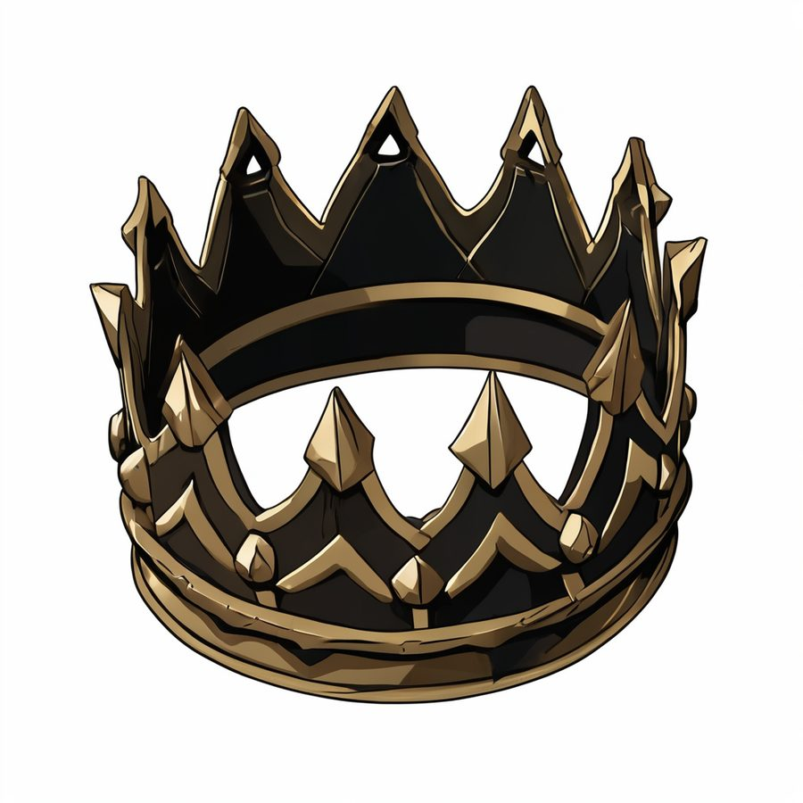
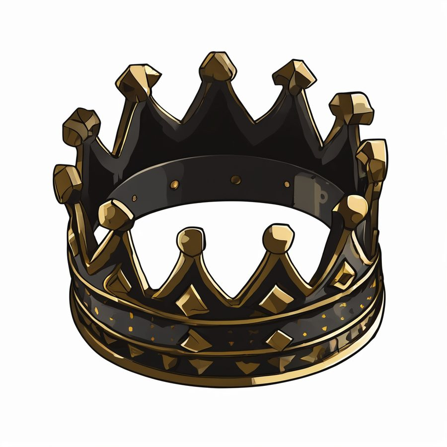
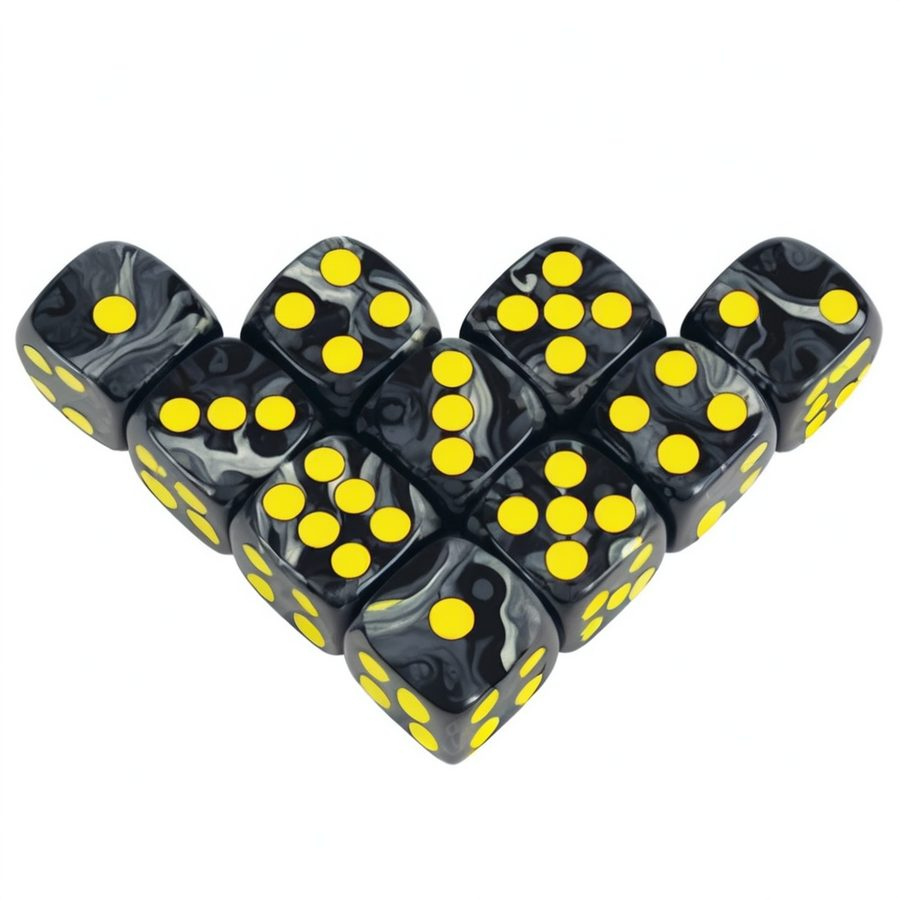
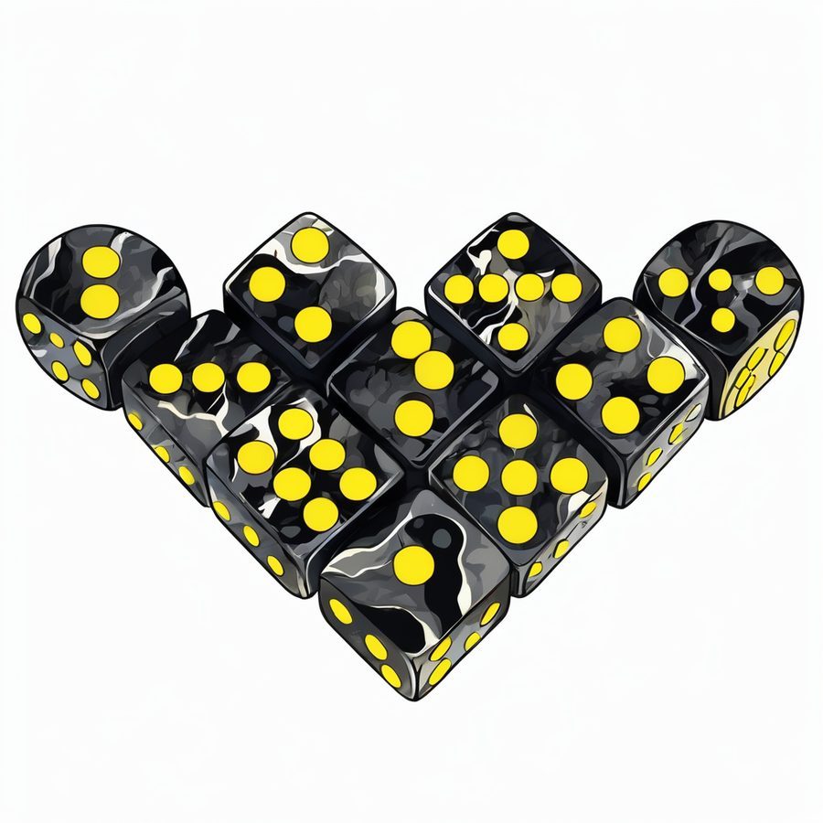
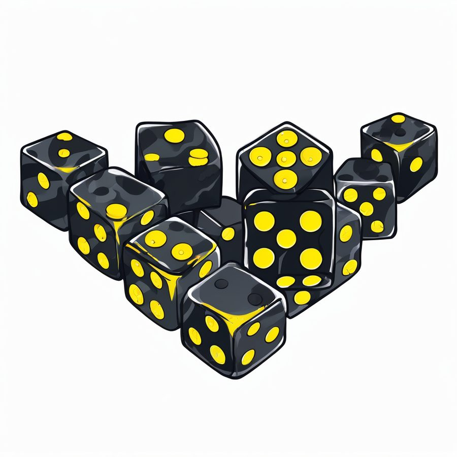
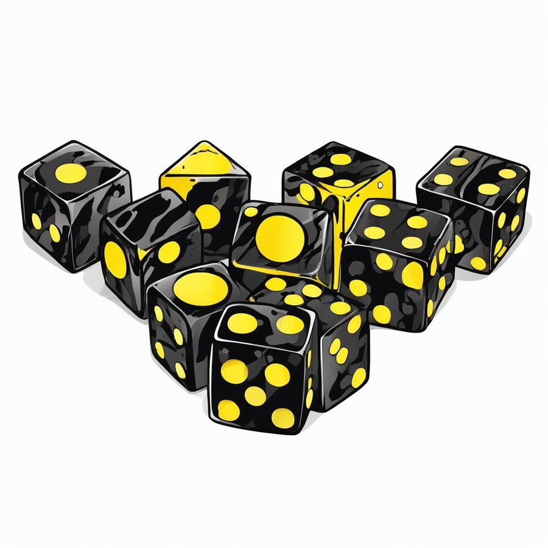
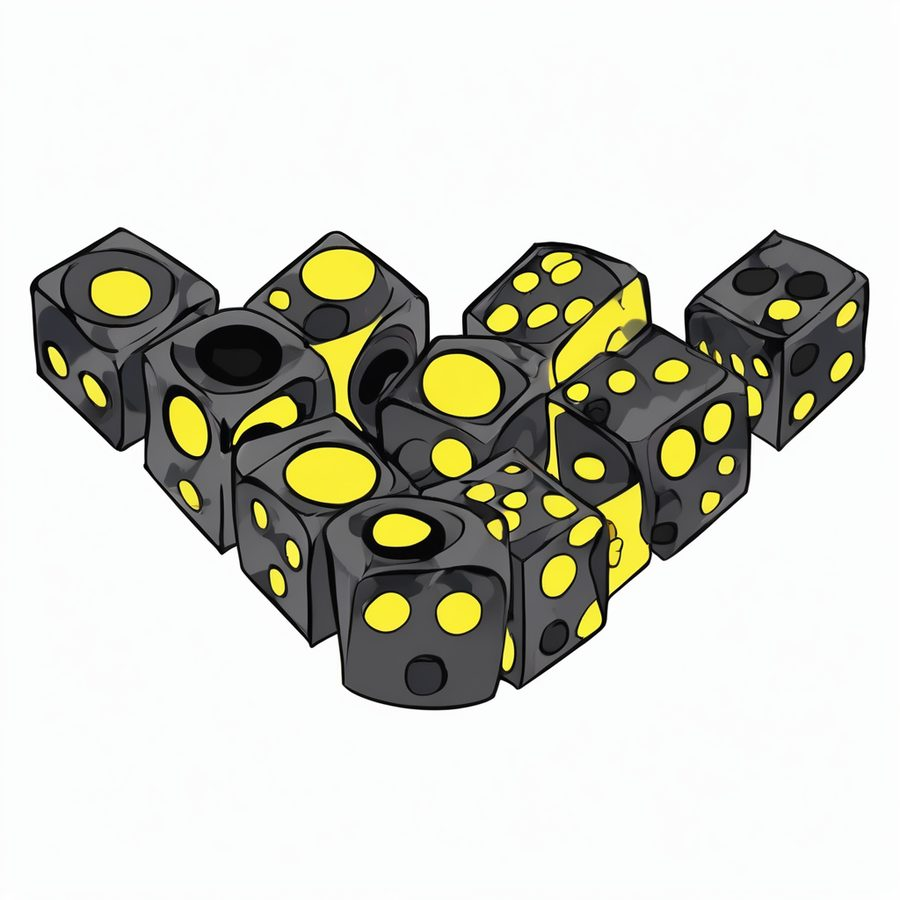
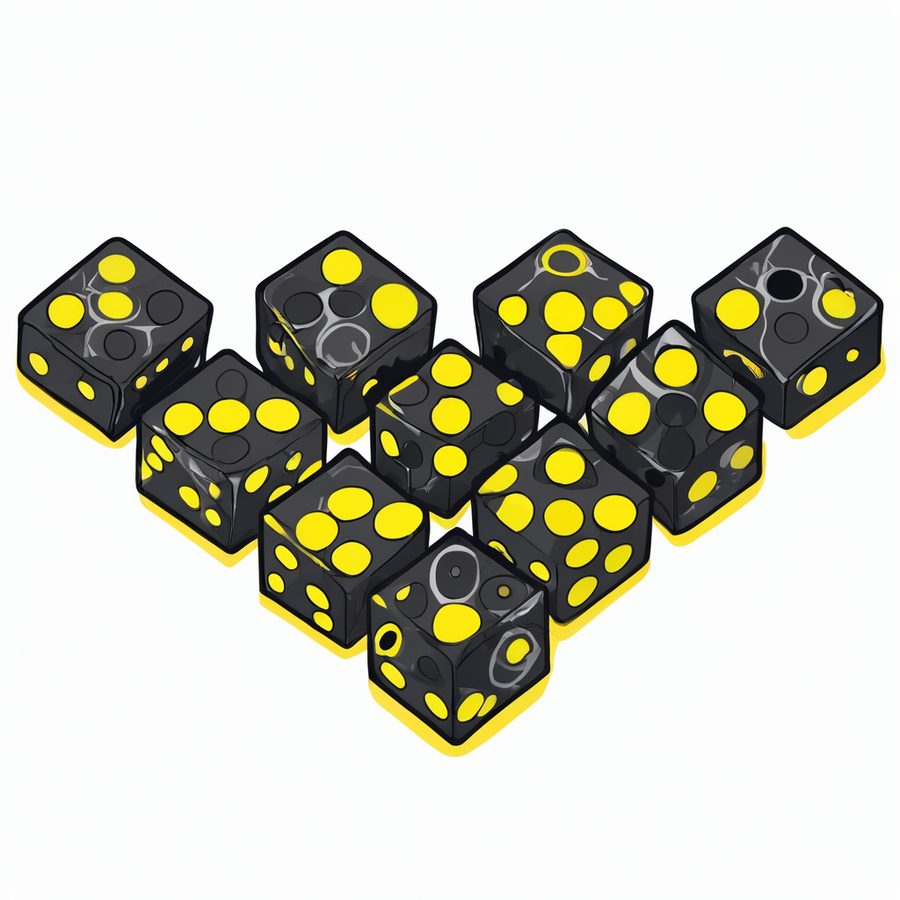
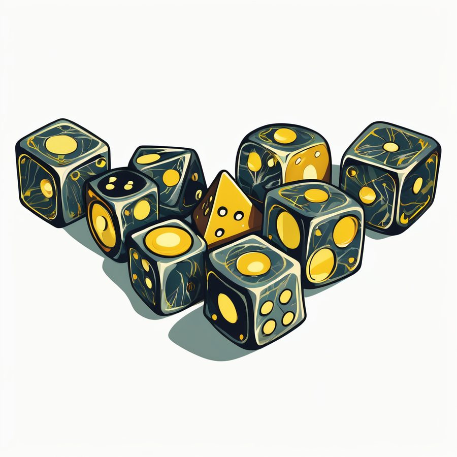
הפרומפט המדויק
ex-02 - product photo -> styled game component + cutout
=======================================================
ENGINE: SDXL 1.0 img2img on the G5 (192.168.0.27), local, no cloud.
CUTOUT: BiRefNet_HR on the same box, via skills/scripts/comfy_cutout.py.
THE ONE DECISION THAT MADE THIS WORK
Identity comes from the photo's pixels, style comes from the words.
The photo is the starting latent (img2img at denoise 0.80-0.82); the style
is text only. Every attempt to move either job to the other channel failed -
see "what broke" below.
LOCKED STYLE BLOCK (identical tail on all three objects)
--------------------------------------------------------
Bold black ink outline, thick clean line art, flat two-tone cel shading,
simplified shapes, no photographic detail. Flat plain white background,
no shadow, no text.
For the pouches only, the outline clause was strengthened to
"Heavy uniform black contour line around each pouch, bold thick clean line art"
in a later pass - it did not win. See what broke.
SUBJECT LINES (the only part that changes per object)
-----------------------------------------------------
dice
Cel-shaded vector game illustration of black marbled dice with bright
yellow round pips.
+ locked style block
crown
Cel-shaded vector game illustration of a small antique brass crown ring:
a short round band with ball-tipped triangular points rising around the
top, and an engraved zigzag pattern along the band. Dark weathered bronze
with worn gold highlights.
+ locked style block
pouches
Cel-shaded vector game illustration of three velvet drawstring pouches
side by side: one dark teal green, one light grey, one dusty purple, each
gathered at the top with a cord and a small black toggle.
+ locked style block
NEGATIVE (shared, _runner/negative.txt)
---------------------------------------
text, letters, words, numerals, caption, signature, watermark, logo, border,
picture frame, matting, photorealistic, photograph, 3d render, blurry, low
resolution, jpeg artifacts, cropped, cut off, head, person, hands, cast shadow,
contact shadow, drop shadow, gradient background, vignette, background scenery,
props, clutter, table, surface, reflection, glossy highlight, specular,
realistic material, soft airbrush shading
WINNERS
-------
| object | init image | denoise | steps | cfg | seed |
|---------|---------------------------|---------|-------|-----|------|
| dice | dice-photo.png | 0.80 | 40 | 7.0 | 2202 |
| crown | crown-photo.png | 0.80 | 40 | 7.0 | 2202 |
| pouches | pouches-init2.png (cropped) | 0.82 | 40 | 7.0 | 2202 |
Exact command shape:
python skills/scripts/comfy_run.py --engine sdxl \
--prompt-file outputs/ex-02/_runner/prompt-dice.txt \
--negative-file outputs/ex-02/_runner/negative.txt \
--out-dir outputs/ex-02/candidates --slug ex-02-dice-i2i-d080-final \
--seeds 2202 --init-image references/props/component-photo-pairs/dice-photo.png \
--denoise 0.8 --steps 40
python skills/scripts/comfy_cutout.py \
--images outputs/ex-02/ex-02-dice-final.png ... \
--out-dir outputs/ex-02 --trim --cut-interior-white
PHOTO PREP (pouches only)
-------------------------
The pouches photo carries printed sizes ("14x18cm/16x20cm/20x30cm") across the
top. At any denoise that text survives as fake lettering, and the negative
prompt does not remove what the init latent puts there. So the photo is cropped
to the pouches, its near-neutral studio backdrop is forced to pure white, and
the crop is centred on a 1024 white canvas before it is used as the init image.
Crop the text out; do not argue with it in the prompt.
WHAT WORKED
-----------
1. Denoise is the identity/style dial, and the usable window is narrow.
0.60 = still a photograph with vector pips. 0.75 = a filtered photograph.
0.80-0.82 = a drawing that is still unmistakably the photographed object.
0.88 = the drawing starts inventing dice.
2. Style by text held up. SDXL took "bold black ink outline, flat two-tone cel
shading" without any reference image, which is the same thing ex-01 found
for oil paint. Words are enough for a rendering language.
3. One locked style block across three very different objects gave a set that
reads as one family - same line weight, same two-tone shading, same white
field.
4. The white generation background made the cutout trivial: BiRefNet returned
clean contours with no halo and no despill needed on any of the three.
WHAT BROKE
----------
5. Style reference + img2img together destroyed the object. Adding the
06-power-card card as an IP-Adapter reference at only 0.5 turned the black
marbled dice teal with gold veins and grew a d4 out of the pile. IP-Adapter
imports the reference's palette, not just its rendering language - the same
trap as ex-01. Once the style is in the text, do not also hand over a card.
6. IP-Adapter cannot count. The photo bound as an IP reference gave the right
material but produced four dice for a prompt that asked for two.
7. Text-only identity inverted the object. With no init image, "black marbled
dice with bright yellow pips" came back as white dice with black pips. The
photo is doing real work that the words cannot replace.
8. My own negative prompt fought the subject. Adding "yellow die, yellow cube,
cheese" to stop one die rendering yellow also suppressed the yellow pips and
punched black holes where pips belonged. A negative term does not know which
object you meant it for - it suppresses the colour everywhere.
9. Pip count does not survive at scale. Twelve dice means about a hundred pips,
and SDXL cannot keep them regular; giant pips and wrong faces appeared in
every pass. This is almost certainly why the production example
(component-dice-pair-api-1.png) is a PAIR. Fewer components, fewer places to
be wrong.
10. Pushing outline weight multiplied the objects. The "heavy uniform black
contour line" pass at cfg 8.5 gave bolder lines and four or five pouches
instead of three. Identity beat line weight, so the earlier pass won.
11. BiRefNet filled the crown's open middle with backdrop white, exactly as
README-NOTES warned. It is invisible on a white page and shows up the moment
the asset is placed. Detecting it needs a check for opaque backdrop-light
blobs enclosed by artwork, not a check for transparent holes -
comfy_cutout.py now reports that number on every asset and cuts it with
--cut-interior-white (54,710 px on the crown).
DEVIATION FROM THE BRIEF, STATED PLAINLY
----------------------------------------
The brief's quality example for the dice photo is a pair on a magenta key. I
kept the photo's full arrangement instead, because the acceptance criterion asks
for the illustrated object to be recognisable as the photographed one down to
the number of dice, and img2img preserves that arrangement for free. The pair
was attempted twice and both routes are in candidates/:
ex-02-dice-pair-ipphoto080-* (wrong count, no outline) and
ex-02-dice-pair-t2i-* (inverted colours). Generation was on white rather than
magenta because BiRefNet is the local path per README-NOTES; the chroma route
needs numpy and scipy, which this laptop does not have.
הערה **Category:** props / img2img. Photo of a real component -> illustrated component
ex-03 אייקון בשני רגיסטרים: flat ו-rich
מועמדים
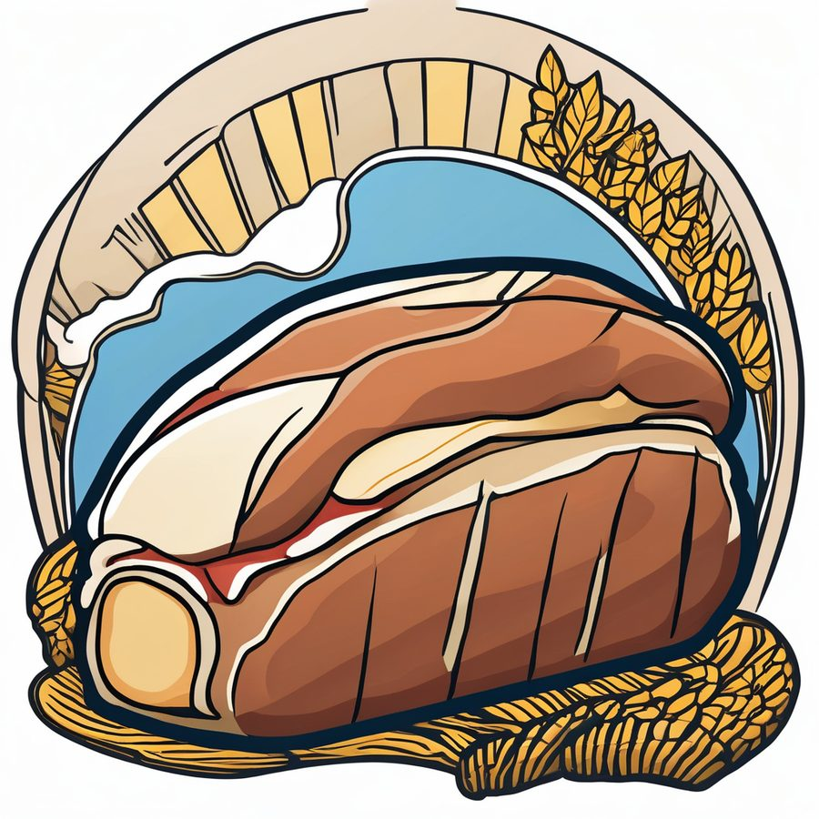
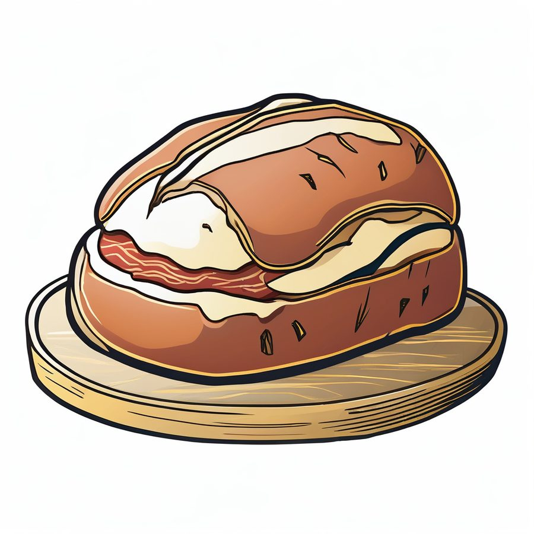
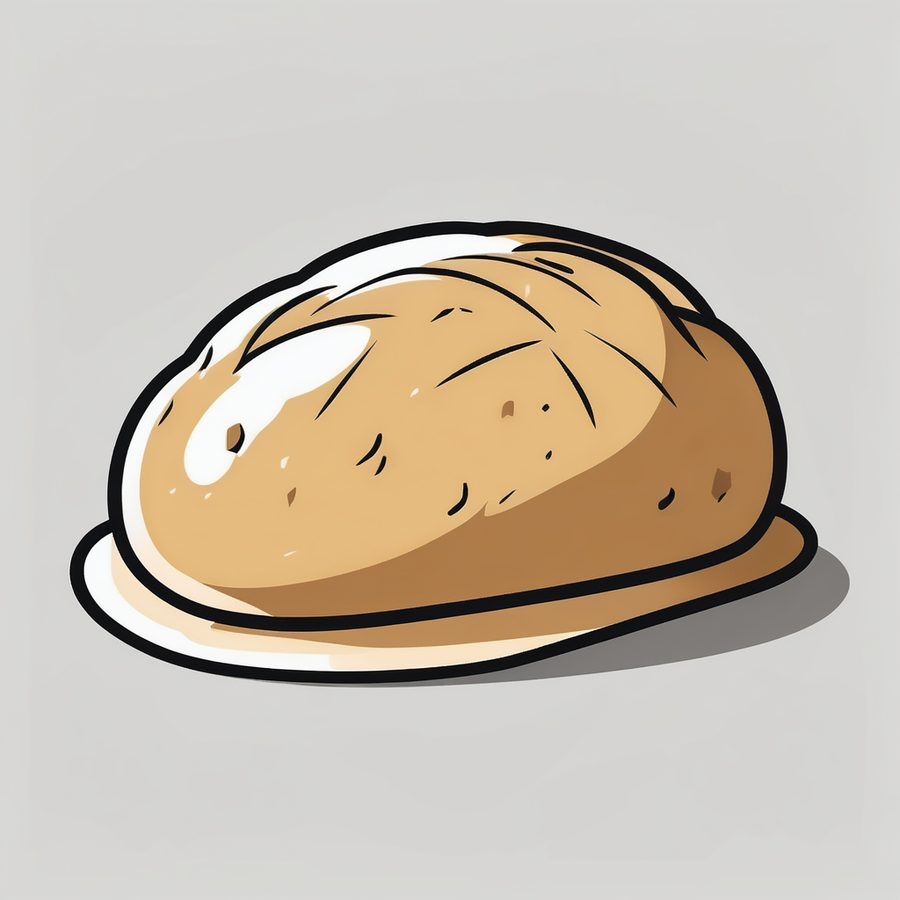
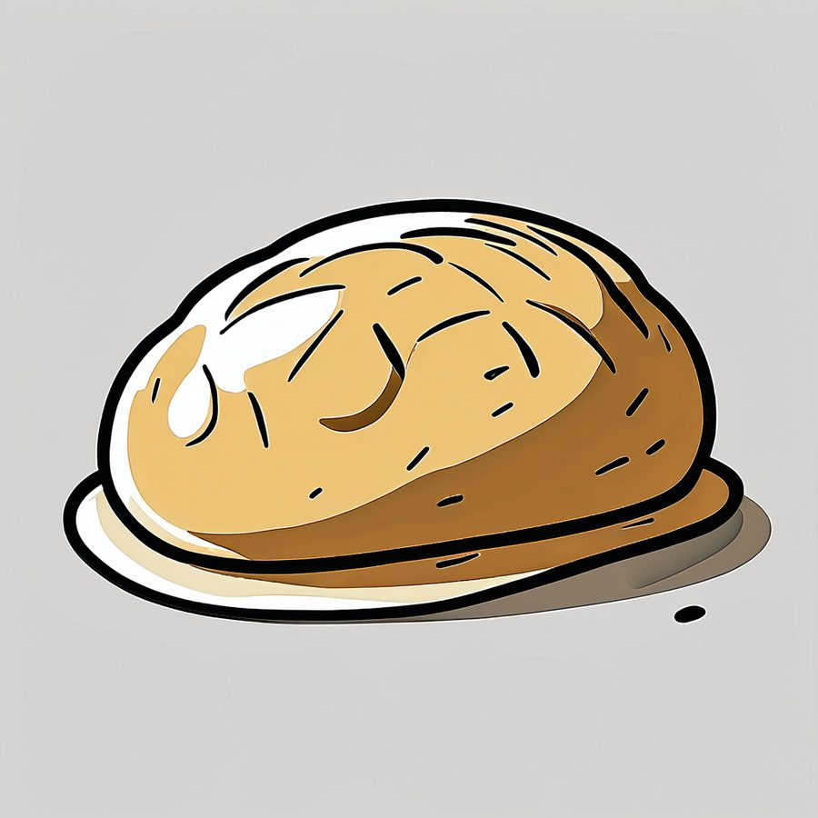
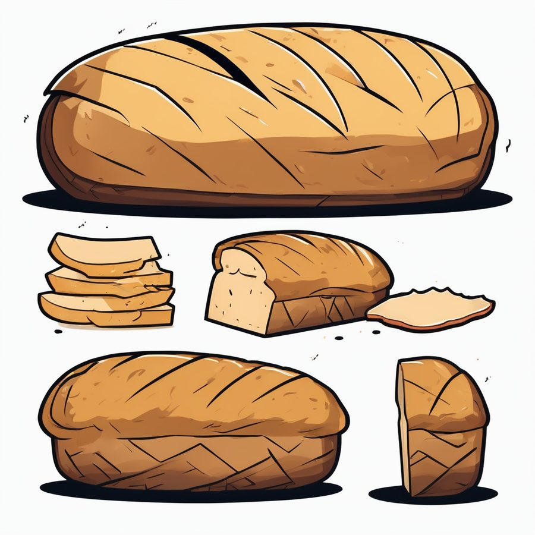
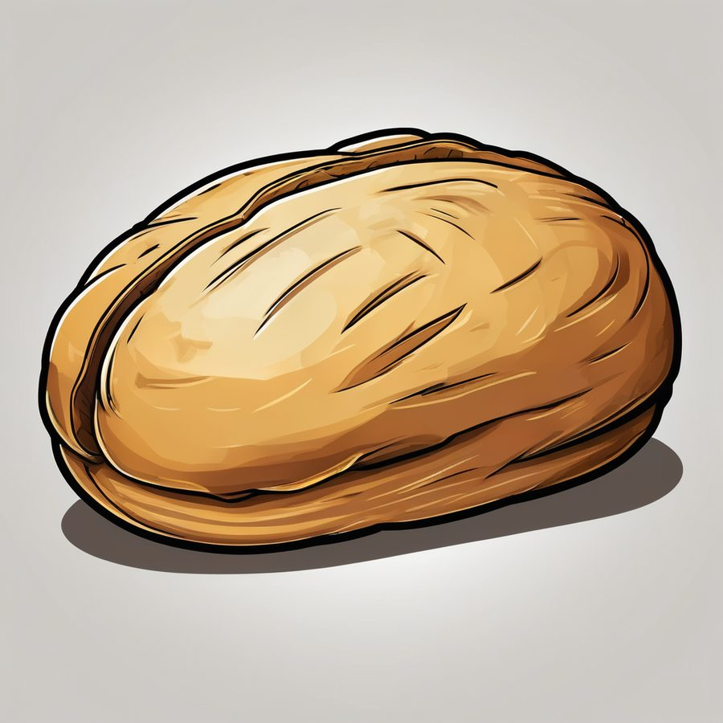
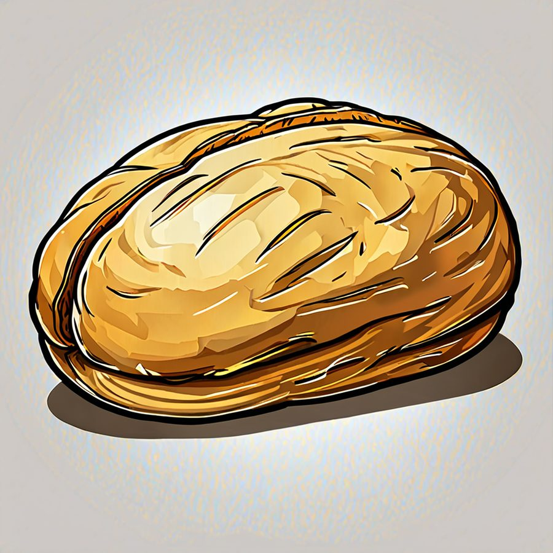
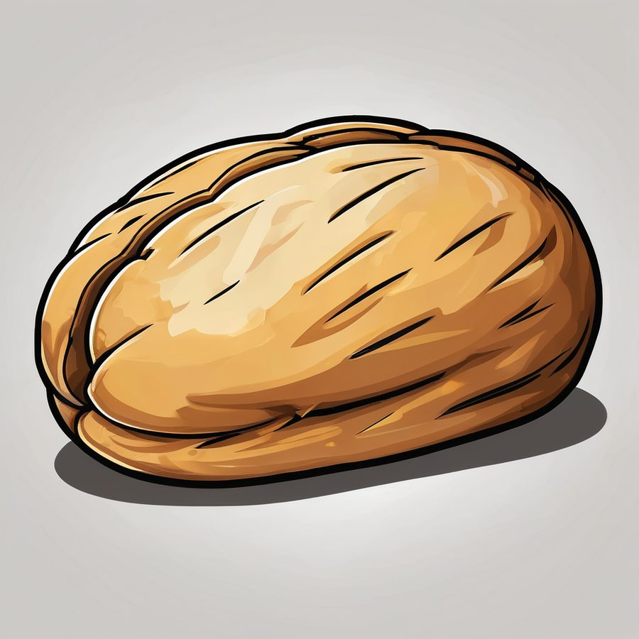
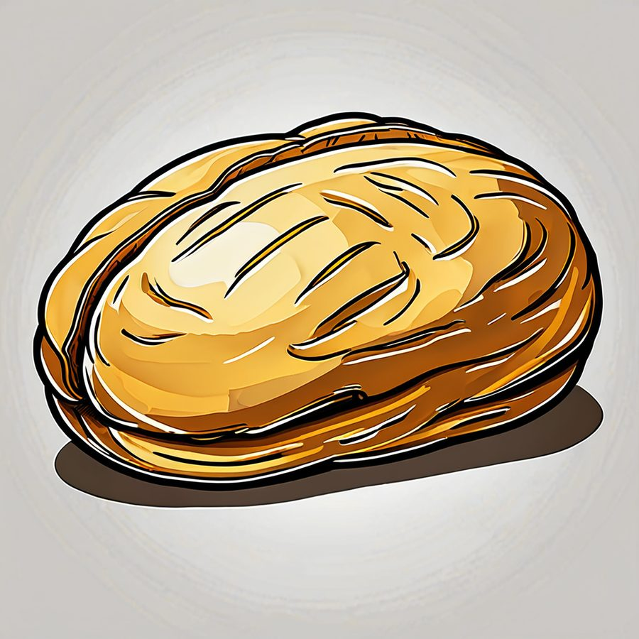
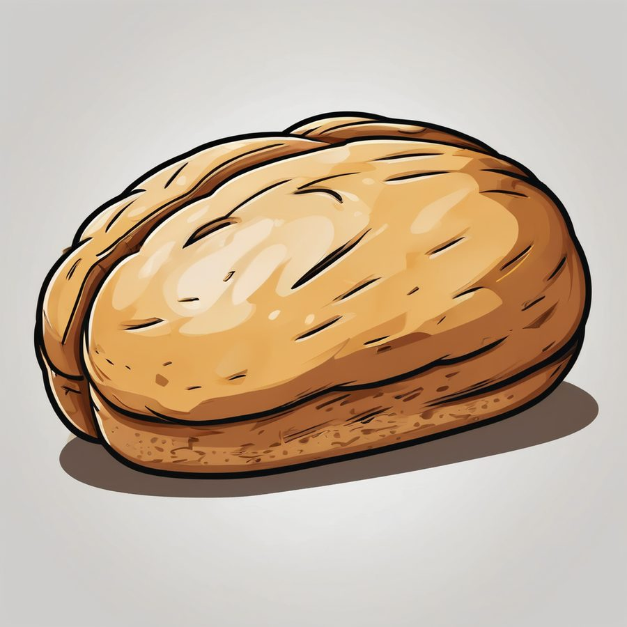
הפרומפט המדויק
ex-03 - one icon, two registers (flat and rich), three new subjects
===================================================================
ENGINE: SDXL 1.0 on the G5 (192.168.0.27). Cutouts by BiRefNet_HR on the same
box. Contour and framing by code, not by the model - see below.
WHAT SEPARATES flat FROM rich IN THIS FAMILY
--------------------------------------------
Read off the three approved pairs (meat, fish, wheat) before writing anything:
| trait | flat | rich |
|---|---|---|
| silhouette | identical between registers | identical between registers |
| outline | very heavy uniform black, same weight in both | same |
| tones per colour | 2 - a base and one darker shade | 3-5 - base, shadow, bright highlight |
| highlights | none | yes, a clear specular |
| interior detail | large simple fields, few division lines | veins, grain, texture lines |
| saturation | slightly muted | pushed brighter |
| background | flat white, no shadow, no ground | same |
So the pair is not two drawings of a subject. It is one drawing at two render
levels, and only the tone count, highlight and interior detail may move.
THE PROMPTS THAT WON (short on purpose - see finding 26)
-------------------------------------------------------
flat, one per subject:
Flat vector game icon, one whole crusty oval bread loaf, golden brown.
Thick heavy black outline, two flat tones only, no highlight, no texture.
Pure white background.
Flat vector game icon, one triangular wedge of yellow cheese with round
holes. Thick heavy black outline, two flat tones only, no highlight, no
texture. Pure white background.
Flat vector game icon, one dark green olive fruit with a small leaf on its
stem. Thick heavy black outline, two flat tones only, no highlight, no
texture. Pure white background.
rich, one per subject - same subject clause, register clause swapped:
Cel-shaded vector game icon, one whole crusty oval bread loaf, golden brown.
Thick heavy black outline, base tone with darker shadow and bright
highlight, fine crumb texture lines. Pure white background.
... wedge of yellow cheese ... fine rind texture lines. Pure white background.
... dark green olive fruit ... fine leaf vein lines. Pure white background.
NEGATIVE (shared, _runner/negative.txt) - the anti-mascot half matters most:
face, eyes, mouth, smile, arms, legs, hands, character, mascot,
anthropomorphic, creature, sliced, slices, crumbs, multiple objects,
duplicate, group, pile, text, ... plate, dish, wooden board, cutting board,
tray, table, surface, wheat, plant, ... grey background, cream background ...
WINNERS
-------
| icon | route | seed | denoise |
|---|---|---|---|
| bread flat | img2img from the rich twin | 1101 | 0.68 |
| bread rich | text to image | 2202 | - |
| cheese flat | text to image | 2202 | - |
| cheese rich | text to image | 2202 | - |
| olive flat | text to image | 1101 | - |
| olive rich | text to image | 1101 | - |
All six then go through the same two mechanical steps:
python skills/scripts/comfy_cutout.py --out-dir outputs/ex-03/_runner/cut \
--suffix=-cut --images <the six winners>
python skills/scripts/icon_finish.py --out-dir outputs/ex-03 --canvas 1024 \
--fill 0.88 --contour 12 --also-transparent "ex-03-icon-bread-flat-final=..."
THE DECISION THAT SAVED THIS EXERCISE
-------------------------------------
The line weight IS the family, and SDXL gave a different outline thickness on
every run - thin and sketchy more often than not. No wording fixed it. So the
contour was taken away from the model: cut the icon to alpha, dilate that alpha
by exactly 12 px, fill the ring black, put the art back on top. Every icon in the
set now carries an identical contour in absolute pixels and an identical margin,
which is what makes six icons read as one family. Same lesson as the frame
skill: when the trait is geometric and measurable, code beats prompting.
The white background came the same way. SDXL almost never returns a clean white
field from text to image - grey, cream and even a cityscape turned up - so the
background is not argued with either, it is cut and replaced.
WHAT WORKED
-----------
1. Register-by-register, not subject-by-subject. Running all three flats
together, then all three riches, kept each register internally consistent.
2. One subject clause per subject, reused verbatim in both registers, with only
the register clause swapped. The pair discipline lives in that reuse.
3. Deriving a flat from its own rich twin by img2img at 0.68 gives both the
shared silhouette and a genuinely flatter render - the only route that got
bread's pair to match.
4. The 100px gate is worth the two minutes. All six survive it; the flat row
stays readable because the contour is heavy and the fields are large.
WHERE THE FAMILY ALMOST BROKE
-----------------------------
5. Prompt length. My first prompts ran past 90 words, and SDXL's CLIP truncates
at 77 tokens, so "pure white background, no shadow, no text" was silently
cut off the end of every one. That single bug produced the grey backdrops,
the decorative frames, the serving boards and the duplicate loaves. Cutting
the prompts to about 30 words fixed more defects than any negative term did.
6. The refsheet trick backfired. Three flat references pasted into one image and
bound as an IP-Adapter style anchor at 0.6 imported the reference *objects*:
wheat stalks grew behind the bread and the olive became a potted plant. At
0.45 with "style transfer precise" it still bled. For a family of isolated
objects the reference teaches the model the wrong lesson - it is a content
source, not a style source.
7. SDXL anthropomorphises lone food items. The olive came back twice as a
cartoon character with legs and a face until "face, eyes, mouth, arms, legs,
mascot, anthropomorphic" went into the negative.
8. Bread is the hardest of the three subjects. Its prior pulls hard towards
bakery scenes, sliced loaves and a serving board; five seeds gave five
variations of that before img2img from the rich twin settled it.
9. The olive's specular highlight will not leave. Even with "two flat tones
only, no highlight" the flat olive keeps a white dot, so the register gap on
the olive is carried by tone count and interior detail rather than by the
absence of a highlight. This is the one place the flat/rich gap is narrower
than in the approved pairs.
הערה **Category:** icons. Three new subjects (bread, cheese, olive) x two registers
ex-04 סט אייקוני RPG בסגנון החדש
מועמדים
הפרומפט המדויק
ex-04 - a six-icon RPG set in the new Hand-Painted Cartoon Fantasy style
========================================================================
ENGINE: FLUX.1-Kontext-dev Q4_K_S on the G5 (192.168.0.27), with all three
style references bound as real pixel conditioning. Cutouts by BiRefNet_HR on the
same box. Panel placement, item scaling and framing by code.
This is the first exercise in the package that does NOT fall back to a cloud
engine, and the reason is a new capability on the G5 - see THE UNLOCK below.
THE UNLOCK: THE REFERENCES ARE NOW PIXELS, NOT ADJECTIVES
---------------------------------------------------------
ex-01 finding 15 listed three things that would close the gap between the local
box and the cloud engines, and one of them was `flux1-kontext-dev`, "which would
let the style card be bound as pixels instead of words". It is now installed:
flux1-dev-Q4_K_S.gguf
flux1-kontext-dev-Q4_K_S.gguf <-- new
So the exercise's instruction 3 - "the three attached images define the STYLE" -
can be obeyed literally for the first time, instead of being translated into
adjectives and hoped for. `comfy_run.py` gained an `--engine kontext` that chains
one `ReferenceLatent` per reference image:
LoadImage -> (FluxKontextImageScale) -> VAEEncode -> ReferenceLatent
-> ReferenceLatent -> ReferenceLatent
-> FluxKontextMultiReferenceLatentMethod(offset)
-> FluxGuidance -> KSampler
Note what this is NOT. It is not img2img: sampling still starts from an empty
latent, so the references steer *rendering* without dictating *layout*. And it is
not IP-Adapter, which has now imported subjects instead of style on three
consecutive exercises (findings 14, 17, 27). The difference showed up
immediately, on the same prompt and the same seed:
| route | background | brushwork | outline | verdict |
|---|---|---|---|---|
| SDXL, words only | warm taupe, wrong | flat, cel-like | thin | style missed |
| Kontext, 1 ref @1MP | correct cool slate | crisp painterly | heavy | good, but a drop shadow |
| Kontext, 3 refs @640px | correct cool slate | soft, washed out | thinner | too soft |
| **Kontext, 3 refs @896px** | **correct cool slate** | **crisp painterly** | **heavy** | **locked recipe** |
The SDXL comparison is worth keeping because it is measurable, not just visible.
`icon_set_qc.py` on the four sword attempts:
sword SDXL words-only hue 32 deg (warm) light 336 deg (lower-right)
sword Kontext 1 ref hue 218 deg (cool) light 102 deg (upper-left)
sword Kontext 3 ref hue 211 deg (cool) light 84 deg
sword Kontext 3 ref 896 hue 212 deg (cool) light 96 deg
The words-only run is wrong on both axes the brief actually grades - palette and
light direction - and the pixel-bound runs are right on both. Reading the
references and describing them carefully was not a substitute for showing them.
THE LOCKED RECIPE
-----------------
engine kontext (flux1-kontext-dev-Q4_K_S.gguf)
references all three, resized to 896px long edge, 16-aligned,
--no-scale-refs, multi-ref method "offset"
guidance 2.5 steps 20 cfg 1.0 (fixed by the engine)
size 1024x1024
time ~335 s per render
python outputs/ex-04/_runner/run-set.py --seeds 1101,2202 --tag k3
Reference resolution is a real dial, not a detail. At 640px the model matched the
references' *softness* as if it were part of the style; at 896px it matched their
brushwork. Three references at 896px cost about 6,500 latent tokens on top of the
output's 4,096, which fits in 8GB and is why they were pre-resized rather than
left to FluxKontextImageScale (three refs at ~1MP each would be ~16k tokens).
THE PROMPTS
-----------
Kontext runs on T5, so the 77-token CLIP ceiling that dominated ex-03 is gone and
the full measured style block fits. Every prompt is head + subject + tail, with
head and tail identical, word for word, across all six:
HEAD (all six, verbatim):
The attached reference images define the STYLE only: hand-painted cartoon
fantasy RPG game icon art. Copy their painting style, not their subjects.
TAIL (all six, verbatim):
Crisp confident edges and high detail. Plain flat dark slate blue-grey
background, completely empty. No drop shadow, no cast shadow, no ground
shadow, no glow. A single object, centred, filling most of the frame,
nothing else in the image, no text.
...preceded by the shading clause:
Thick warm dark-brown outline around the whole silhouette, soft blended
brush shading inside with visible painterly gradients, rounded glossy
volume, a soft specular highlight and the light clearly coming from the
upper left.
SUBJECT CLAUSES (the only thing that changes):
sword Draw one upright medieval broadsword: steel blade, ornate gold
crossguard and pommel, brown leather wrapped grip.
potion Draw one round glass potion bottle: glowing blue liquid inside,
cork stopper, small gold neck band.
pouch Draw one brown leather coin pouch tied with a rope drawstring, gold
coins spilling out at its base.
map (rerolled, see below)
key (rerolled, see below)
torch Draw one wooden torch: brown wooden handle, cloth-wrapped head,
bright orange flame burning at the top.
Every clause and its evidence in the references is written up in
`_runner/style-block.txt`. Nothing in the style block was guessed: the light
direction came from measuring 38 icons across the three sheets, the palette from
quantising them, the outline weight from full-resolution crops.
NEGATIVE: none in effect. Kontext runs at cfg 1.0, which makes the negative
conditioning inert. `_runner/negative.txt` exists and was used for the SDXL
comparison runs only. This is why every "no" above had to be written into the
POSITIVE prompt, and why two of them still had to be won by rerolling.
WHERE THE MODEL STOPS AND THE CODE STARTS
-----------------------------------------
Six icons on six model-drawn panels would be six different panels. So the panel
was generated once, approved once, and is then placed by code on all six:
2 panel candidates -> seed 2202 approved (1101 returned a circle, not a
rounded square) -> BiRefNet cutout -> reused as an anchor, identical pixels,
on every icon.
That is package rule 4 applied to a frame, and the same call ex-03 made about
outline weight: when a repeated trait is geometric and measurable, code beats
prompting. The consequence is that "is the panel consistent across the set?"
stops being a question about the model at all.
The geometry was measured off the approved panel rather than eyeballed: the panel
is 802px wide in its own render and its centred tan safe square is 500px, so the
inset is 0.62. The item then spans 0.90 of that, and the whole set shares one
number for each:
panel-fill 0.94 inset 0.62 icon-fill 0.90 icon-dx -12 icon-dy -17
shadow-blur 14 contour 0 (the model's own outlines were good enough)
icon-dx/dy exist because a hand-painted panel is not centred in its own bounding
box - its tan centre sits 12px left and 17px above the panel's geometric centre,
so items follow the optical centre instead.
THE WHOLE FINISHING PASS IS ONE COMMAND, deliberately:
python outputs/ex-04/_runner/finish-set.py
It reads `_runner/winners.txt`, then does the cutouts, the composite, the 2x3
grid, the 100px legibility gate and the consistency report. The consistency claim
of this exercise rests on all six icons getting identical treatment, so the
treatment is a script rather than six typed command lines - there is no way for
one icon to quietly keep an older setting.
WINNERS
-------
| icon | candidate | why |
|---|---|---|
| sword | k3 seed 1101 | 2202 grew an orange magical glow no other icon has |
| potion | k3 seed 1101 | heavier contour than 2202 |
| coin pouch | k3 seed 1101 | cleaner rope tie and coin spill than 2202 |
| map | k3fix seed 5505 | rerolled for contrast, see below |
| key | k3fix seed 3303 | rerolled for the missing contour, see below |
| torch | k3 seed 1101 | 2202's handle came out rope-twisted |
19 renders in `candidates/`, including every failed route.
THE TWO REROLLS - THIS IS THE EXERCISE'S STEP 6 DOING ITS JOB
-------------------------------------------------------------
1. THE KEY WAS THE GUEST. Both first-pass keys came back as glowing magic keys
with a yellow aura and NO dark outline at all, in a set where the heavy
contour is the family trait. The fix was to argue with the prior explicitly in
the positive prompt - "it is an ordinary everyday object: it is NOT magical,
it does NOT glow, no halo, aura, rim glow or sparkle" plus "draw a thick warm
dark-brown outline all the way around its silhouette, exactly like the outline
on the other icons in this set" - and to move from gold to "dull antique
brass". Measured before and after, rim ink went 0.0% -> 78.6%.
2. THE MAP DISAPPEARED INTO ITS OWN PANEL. It passed every consistency test and
still failed as an icon: cream parchment centred on a cream parchment panel.
Nothing was wrong with the map in isolation, which is exactly why the 2x3 grid
is a required step and not a formality - the defect only exists in context.
Rerolled asking for DARK aged ochre-brown parchment, dark wooden rods and a
bold red route, specifically so it would separate from the panel behind it.
WHAT HELD THE SET TOGETHER, AND WHAT THREATENED IT
--------------------------------------------------
HELD IT:
1. Binding the three references as pixels. One change fixed palette, background
temperature and light direction at once - the three things the brief grades.
2. One head clause and one tail clause, byte-identical in all six prompts, with
the subject as the only variable.
3. The panel as a placed anchor rather than a re-drawn element, so the most
repeated shape in the set cannot drift.
4. Fixing all geometry in one script, so the six cannot diverge by hand.
THREATENED IT:
5. Kontext has no working negative prompt. At cfg 1.0 the negative conditioning
does nothing, so every prohibition competes with the subject's prior inside
the positive prompt - and loses when the prior is strong. Both rerolls were
this: "no glow" lost to "magic key", and gold lost to glowing gold.
6. Reference resolution silently became a style parameter. 640px references
taught the model to paint softly. Nothing in the prompt changed; only the
evidence did.
7. Thin subjects carry less visual weight than chunky ones when every item is
fitted to the same bounding box. The sword and torch read lighter than the
pouch and key. Fitting by area instead of bounding box would even this out,
and is the obvious next improvement to `icon_panel.py`.
8. The drop shadows that survived "no drop shadow" were removed by the cutout,
not by the prompt - the same conclusion ex-03 reached about backgrounds:
do not argue with the model about something a later pass can simply delete.
הערה this is the first exercise delivered entirely on the local box, with no cloud fallback. `flux1-kontext-dev` has appeared on the G5, which is one of the three unlocks ex-01 finding 15 said were needed, and it changes the answer to the question the package keeps asking.
ex-05 סט אסימונים עגולים
מועמדים
הפרומפט המדויק
ex-05 - four round season tokens, one mint
==========================================
ENGINE: FLUX.1-Kontext-dev Q4_K_S on the G5 (192.168.0.27), with style
references bound as real pixel conditioning. Motif cutouts by BiRefNet_HR
except winter (colour-distance; see below). Circular alpha, motif seating and
the 4-up all by code.
Theme: the four seasons. Style: Emperor's Clothes / renaissance oil (bgdi
ha-melekh, the Dusty Trails pole). This is the first exercise in the package
to take that contract; ex-02 and ex-03 both worked the flat cel-shaded one.
THE THING THE MEASUREMENT SETTLED
---------------------------------
`references/props/value-bases/` is two round tokens that share one ornate gold
rim across two colourways. measure-base-rim.py compared them band by band:
r 0.76-0.90 THE GOLD RIM. dE between the two colourways: 0.0 at every band.
dE 0.0 is not "consistent". It is the same pixels. Production did not solve
token rim consistency by writing a careful rim sentence and re-rendering it.
It drew the rim once and reused it. That is why this exercise renders the
base once, approves it once, and places it by code on all four tokens.
The control arm exists to put a number on the other route. Four whole tokens,
rim re-prompted every time, same engine, same references, same seed:
worst pairwise rim distance: 47.0 (autumn the guest)
spring/summer/winter sit at 5-7, under the budget of 12
autumn is 44-47 away from the other three
The delivered set, one placed base:
worst pairwise rim distance: 0.1 -> one mint
0.1 is antialiasing. 47.0 is a different object. The rim sentence cannot do
this job, however carefully it is written.
THE LOCKED RECIPE
-----------------
engine kontext (flux1-kontext-dev-Q4_K_S.gguf)
base refs the two value-bases, 896px long edge, --no-scale-refs
oil refs 11-emperors-clothes, CF-01 still life, hanut-mitzuk interior
same 896px, three of them, method "offset"
guidance 2.5 steps 20 cfg 1.0 (fixed by the engine)
size 1024x1024
time ~380 s per motif once the model is warm; first of a run ~800 s
python outputs/ex-05/_runner/run-set.py base --seeds 1101,2202,3303
python outputs/ex-05/_runner/run-set.py motif3 --seeds 1101,2202 --tag k3v3
python outputs/ex-05/_runner/run-set.py winterfix --seeds 1101,2202,3303 --tag k3v3fix
python outputs/ex-05/_runner/finish-set.py
Geometry, all as fractions of the disc radius R, measured off the production
bases and the production dish token, not chosen:
disc edge r = 0.90 of the canvas half-width
rim band 0.844 R to 1.000 R
field 0.000 R to 0.844 R
motif kept inside 0.700 R (production's own motif on the dish token)
punch-safe 0.850 R (the brief; production agrees to 0.5%)
Approved base is seed 2202: fitted centre (511, 512), radius 0.898 of the
half-width, gold starts at 0.82 R. Seed 3303 overflowed the canvas
(radius 1.018 of the half-width). Seed 1101 was 8 px off centre.
THE RIM SENTENCE (locked, used on the base and on the control arm)
-----------------------------------------------------------------
A wide ornate gold rim band runs all the way around the outer edge of the
disc: a repeating raised relief of laurel leaves and small beads, cast in
antique gold, the recesses sunk in dark umber and the crests catching pale
warm gold, the same pattern repeating evenly the whole way around.
THE MOTIF PROMPTS
-----------------
Kontext runs on T5, so the full measured style block fits. Head and tail are
generated, not typed: build-prompts.py emits them from one HEAD and one TAIL,
then asserts there is one distinct head and one distinct tail across the four.
The subject clause is the only variable.
Three tails were tried. v1 and v2 asked for a flat mid-grey field so the
cutout would be easy. Both painted botanical plates: median luma 139-159
against the references' 53-81, highlights 225-233 against 174-186. v2 piled
more words about chiaroscuro on top of the grey field and moved nothing
(median 159 vs v1's 155). The grey field is a product-shot prior, and at
cfg 1.0 a description cannot outvote it - ex-04 finding 35 again. The three
bound oil references could not help, because not one of them shows an object
on a flat pale field.
v3 stops fighting and asks for the ground the references actually contain: a
near-black warm umber. That is in style, the pixel conditioning can support
it, and it happens to be the colour of the token field the motif is about to
be seated on.
HEAD (all four, verbatim):
The attached reference images define the STYLE only: a renaissance oil
painting, thickly glazed and painterly. Copy their painting style, their
warm amber and ochre palette and their deep chiaroscuro. Do not copy their
subjects.
TAIL v3 (all four, verbatim):
The object is lit by one strong warm light from the upper left and sits
in front of a deep near-black warm umber ground, an unlit painted wall of
shadow with nothing in it, the same dark tone in all four corners, no
vignette and no gradient. Most of the object falls away into that shadow;
only the upper-left of it is fully lit, glazed up to a soft warm cream
highlight that never reaches white. Every edge is a soft painted
transition rather than a drawn line, thickly painted with visible
brushwork and rich dark glazes. No drop shadow, no cast shadow, no ground
shadow, no glow, no table, no cloth, no scenery, no window. A single
object, centred, filling most of the frame, nothing else in the image, no
text.
SUBJECT CLAUSES:
spring Draw one small sprig of almond blossom: a slender bare brown twig
bearing three open five-petalled blossoms of pale pink and cream
with fine gold stamens, and two small fresh green leaves.
summer Draw one small bunch of ripe grapes: a dense cluster of deep
violet-purple grapes with a soft dusty bloom on their skins,
hanging from a short woody stem, with one broad green vine leaf
behind them.
autumn Draw one ripe pear: a single golden-russet pear with a freckled
sun-warmed skin and a short dark woody stem, one curled red-brown
leaf still attached at the stem.
winter (rerolled, see below)
NEGATIVE: none in effect. Kontext runs at cfg 1.0. `_runner/negative.txt`
exists for the record.
WINNERS
-------
| token | candidate | why |
|---|---|---|
| base | k3 seed 2202 | centred, radius 0.898 of half-width; 3303 overflowed the canvas |
| spring | k3v3 seed 2202 | on-style; 1101 was five blossoms instead of three |
| summer | k3v3 seed 1101 | 2202 sat the bunch on a table with a cast shadow |
| autumn | k3v3 seed 1101 | on-style, light from the upper left; 2202 lit from the upper right |
| winter | k3v3fix seed 3303 | a cutting with three berries; see the reroll |
Every failed route is in `candidates/`.
THE WINTER REROLL
-----------------
v3 winter was a Christmas tree on both seeds: planted sapling, roots, a
triangular silhouette, and on 1101 a candle flame on top. "sprig of pine with
holly berries and frost" is a Christmas-tree prior, and "no glow / no scenery"
in the tail lost to it the same way "no glow" lost to "magic key" in ex-04.
The fix names the opposite in the positive subject clause:
Draw one short CUT sprig of pine, a few inches long, snapped off a branch:
a single crooked woody stick with stiff dark blue-green needles along it
and exactly three round scarlet holly berries clustered on one side. It is
a CUTTING lying in space, not a tree and not planted: no trunk, no roots,
no soil, no ground, no triangular Christmas-tree silhouette, no flame, no
candle, no ornaments, no star, no glow. The needles are edged with pale
silver frost.
Three seeds. 1101 was still slightly tree-shaped with four berries. 2202 grew
the golden butterfly from the Emperor's Clothes style card - Kontext leaking a
style-ref subject onto a sparse canvas. 3303 is the cutting: three berries,
upper-left light, no flame, no butterfly.
WHERE THE MODEL STOPS AND THE CODE STARTS
-----------------------------------------
Four tokens with four model-drawn rims would be four rims. So the base was
generated once, approved once, and is then placed by code on all four - package
rule 4 applied to a punchable disc, and the same call ex-03 made about outline
weight and ex-04 about the panel.
python outputs/ex-05/_runner/finish-set.py
It reads `_runner/winners.txt`, cuts the motifs (BiRefNet for spring/summer/
autumn; colour-distance for winter), seats each motif on the one approved base
at identical geometry, and emits the finals, the 4-up, the punch-safety overlay,
the 100px legibility strip and the QC report. Scale is chosen by AREA so a wide
sprig and a compact pear carry the same visual weight (ex-04 finding 41), then
capped at 0.70 R so nothing reaches the rim.
Winter is the exception that proves the cutout rule. BiRefNet on the dark
needles against the near-black umber wall kept three berries (3% of the canvas)
and ate the sprig. The token went out with a berry hanging off the rim. Colour
distance from the corners recovered the sprig; a pass that drops a ground-disc
flare at the foot then takes the table with it. finish-set.py does this itself
so a rerun cannot quietly send winter back through BiRefNet.
Delivered placement:
spring scale 0.658 radius cap area 11.2% reach 0.70 R
summer scale 0.639 area area 15.5% reach 0.64 R
autumn scale 0.650 area area 15.5% reach 0.66 R
winter scale 0.529 radius cap area 6.8% reach 0.70 R
Winter is a thin sprig, so the radius cap fires before the area target. It
reads lighter in the slot than the pear and the grapes. Finding 41, accepted
rather than chased: letting it past 0.70 R would put needles in the punch zone.
WHAT HELD THE SET TOGETHER
--------------------------
The rim was drawn once and placed by code. That is the whole answer to "what
kept the rim consistent." The control arm scored 47.0 on the same sentence.
Everything else - one head, one tail, pixel-bound oil references, one finishing
script - is the same machinery as ex-04, pointed at a disc instead of a panel.
הערה production's own two value-bases share a rim at dE 0.0 because they share the pixels. Re-prompting that rim four times scored 47.0. Placing one approved base scored 0.1. The brief's "write a rim sentence and keep it identical" is the wrong tool for a geometric trait.
ex-06 שלוש מסגרות קלף: פיראטים, ים, בישול
מועמדים
הפרומפט המדויק
ex-06 - three themed poker-card frames (pirates / sea / cooking)
================================================================
ENGINE: FLUX.1-Kontext-dev Q4_K_S on the G5 (192.168.0.27). One geometry
reference bound as pixels. Empty centre, band thickness and corner identity
placed in Python. LANCZOS-upscale to 1500x2100 after the crop.
How the empty centre was beaten: the model was allowed to draw the ornate
band; Python then cropped the cream halo, copied one corner by flip, upscaled,
and punched a solid flat inner rectangle (10% of the short edge). That is
finding 42 applied to a card instead of a rim.
THE LOCKED RECIPE
-----------------
engine kontext (flux1-kontext-dev-Q4_K_S.gguf)
geometry ref location-cards-front-frame.png only, 896px long edge
(624x896), --no-scale-refs. Do NOT bind the rope frame.
guidance 2.5 steps 20 cfg 1.0 (fixed by the engine)
size 1024x1440 (16-aligned 2.5:3.5 that fits 8GB)
finish crop halo -> flip-copy TL corner -> LANCZOS 1500x2100
-> punch 10% of short, fill (252, 248, 240)
time 193-243 s per seed once warm; no OOM
python outputs/ex-06/_runner/analysis/prep-refs.py
python outputs/ex-06/_runner/build-prompts.py
python outputs/ex-06/_runner/run-set.py --only pirates --seeds 1101,2202
python outputs/ex-06/_runner/run-set.py --only sea --seeds 1101,2202
python outputs/ex-06/_runner/run-set.py --only cooking --seeds 1101,2202
python outputs/ex-06/_runner/finish-set.py
Measured location-cards-front-frame.png before prompting: 700x996 RGBA,
ornament band 20-22 px = 2.9-3.1% of the short edge, four corners identical,
transparent centre. The rope frame (966x970) is a theme example in words only.
REFERENCE BINDING
-----------------
--style-ref outputs/ex-06/_runner/analysis/ref896-location.png
Flattened onto cream (247, 240, 230) so the bound empty-centre prior is a
light field, not the file's stored black/transparent.
case-file-cards-rope-frame.png was NOT bound. On a sparse card, Kontext copies
subjects out of a style-ref (finding 44). The location frame is itself a thin
brown rope, so even this one-ref binding leaked rope into cooking 1101
(finding 48). Binding the second rope would have made cooking hopeless.
THE PROMPTS
-----------
Head and tail are byte-identical across themes. The theme block is the only
variable. Assembled by build-prompts.py from head.txt / theme-*.txt / tail.txt.
HEAD:
The attached reference image defines GEOMETRY only: a poker-card rectangular frame whose ornament lives in a perimeter band and whose interior is a large empty field. Copy the wrap — a uniform band around all four sides and four matching corners — not the reference's rope, not its colour, not its motifs, not its subjects. Draw one poker playing card, tall 2.5:3.5 portrait, full bleed to the edges.
The ornament is a WIDE packed decorative picture-frame moulding occupying the outer tenth of the short edge (eight to twelve percent of the short side), the same thickness all the way around. This is a filled carved moulding, richly packed with repeating motif, not a hairline and not a single strand of string.
All four corners carry the identical corner-piece at the same scale, turned to follow each corner.
The interior panel inside the band is an ordinary blank ivory card face: one solid flat unpainted light cream tone, empty, untextured.
THEME PIRATES:
Theme of the moulding only, living strictly inside the outer band: coiled weathered hemp rope and knotted line as carved repeating border-work, small anchors and ship's wheels as corner stamps, cutlass hilts and compass roses as repeating side motifs, skull-and-crossbones as a small identical corner medallion on all four corners, braided cords running the long sides. Warm tarred-wood and antique brass colour. These are border stamps and moulding, not objects in the middle of the card.
THEME SEA:
Theme of the moulding only, living strictly inside the outer band: stylised wave scrolls and spiral foam as carved repeating border-work, scallop shells and cowries as corner stamps, pearls and barnacles as repeating beads along the sides, seaweed fronds and net mesh as the long-side running ornament, a small fish silhouette as a repeating side stamp. Sea-glass teal, pearl cream and weathered verdigris-brass colour. These are border stamps and moulding, not a seascape in the middle of the card.
THEME COOKING:
Theme of the moulding only, living strictly inside the outer band: carved olive-wood kitchen moulding of wooden spoons, rolling pins and whisks as repeating border-work, star anise and peppercorns as corner stamps, twisted herb sprigs and apron-lace as the long-side running ornament, ladle bowls as repeating side motifs. Warm olive-wood, copper and dried-herb colour. These are kitchen-tool border stamps and moulding, not a still-life of food in the middle of the card. The moulding is carved wood and copper kitchen tools, not rope and not nautical.
TAIL:
The centre of the card is an ordinary blank ivory playing-card face, solid flat unpainted cream, no illustration, no still-life, no objects sitting inside the band, no vignette, no gradient, no paper grain, no glow, no shadow pooling inward. Ornament exists only as repeating border decoration in the outer band. No letters, no numerals, no captions, no logos, no watermarks. A single card frame filling the image, nothing else.
WINNERS
-------
pirates seed 1101 (2202 had rounder skull medallions but a vignetted centre)
sea seed 1101 (2202 was art-nouveau seed-pods, weaker sea)
cooking seed 2202 (1101 still wore the location-ref dual rope)
Raw candidates in outputs/ex-06/candidates/.
FINAL QC (after punch, 1500x2100)
---------------------------------
pirates band 10.0% all sides center std 0.00 corner RMSE 2.2
sea band 9.0% mean center std 0.00 corner RMSE 0.0
(left walk 6.1%: cream pearls fool the walker, finding 49)
cooking band 10.0% all sides center std 0.00 corner RMSE 5.1
הערה an empty-centre card is a sparse canvas, so the empty field, the band thickness and the four corners are placed pixels, not a repeated sentence. Re-prompting the centre empty is the analog of re-prompting the rim.
ex-07 שחזור מסגרת מפרומפט קיים
מועמדים
הפרומפט המדויק
ex-07 - floral square band from a real production prompt
========================================================
ENGINE: FLUX.1-Kontext-dev Q4_K_S on the G5 (192.168.0.27).
Ornament: floral (frame-band-floral.txt). Product target bound as
pixels. Magenta chroma-key kept as magenta; not improved to white.
engine kontext (flux1-kontext-dev-Q4_K_S.gguf)
product ref frame-band-square-floral-api-1.png at 896x896,
--no-scale-refs. Not the location rope, not the
thick acanthus box frame.
guidance 2.5 steps 20
size 1024x1024
time 225-233 s/seed once warm; VRAM free ~7.45 GB
numpy not installed on this IdeaPad; chroma_cut.py /
qc_greenscan.py cannot run here. PIL probe used.
CHOSEN PROMPT, READ LINE BY LINE
--------------------------------
prompts/frame-prompts/frame-band-floral.txt (3388 bytes, copied
verbatim to _runner/prompt-verbatim.txt)
GEOMETRY CONSTRAINTS
"ONE very thin gold rectangular frame" / "empty picture frame,
nothing inside it"
outer magenta margin ~8% of canvas, artwork never touches the edge
gold band ~2% of canvas (~1/50), same thickness all four sides
central 80% empty flat magenta
ornament continuous through softly rounded corners
CONTROL PHRASES
"Flat vector ornament artwork for a printed board game"
REFERENCE ROLES: ref 2 acanthus = motif/palette/drawing-hand,
IGNORE its thickness (3x too thick), corner bouquets, crown
ref 1 brown rope = thinness + unbroken even density only,
IGNORE brown colour and rope/cord/twist/braid
MOTIF: five-petal rosettes + paired veined leaves, flower-leaves
rhythm, no rope/cord/twist/braid/interlace/chain/loops/eyelets
COLOUR: amber honey #F2AC30, NOT lemon/canary/bright yellow,
keyline #A8721C, highlight #fcd34d
STRICT: continuous dense band, four-fold symmetry, NO crown /
cartouche / finial / emblem / corner medallion, no text, flat cel,
no shadow/glow/bevel/gradient/photo-metal/3D/reflections
MAGENTA INSTRUCTION
"centred on a perfectly flat magenta background"
"perfectly flat #FF00FF magenta, edge to edge, no gradient, no
vignette, no shadow cast onto it. None of that magenta appears
anywhere inside the gold artwork."
ORIGINAL PROMPT (verbatim run, no word changes)
-----------------------------------------------
Flat vector ornament artwork for a printed board game. Produce ONE very thin gold rectangular frame - an empty picture frame, nothing inside it - centred on a perfectly flat magenta background.
REFERENCE ROLES
Reference 2 is the large gold acanthus frame. It is the MOTIF, PALETTE and DRAWING-HAND authority. The new frame is drawn by the same hand, in the same ornamental vocabulary: the same gold tones, the same crisp black contour, the same flat cel shading, the same engraved detail inside each petal and leaf. IGNORE its thickness completely - it is roughly three times too thick - and ignore its big corner bouquets and its crown.
Reference 1 is the brown rope frame. It is ONLY the authority for two things: how THIN the band is relative to the whole canvas, and the way the ornament is one continuous unbroken run of even density from corner to corner. IGNORE its brown colour and IGNORE its rope motif entirely - there is no rope, no cord, no twist and no braid anywhere in the new frame.
GEOMETRY - the part that matters most
- An empty flat magenta margin runs around the outside, about 8% of the canvas on all four sides. The artwork never touches the canvas edge.
- The gold band is EXTREMELY THIN: about 2% of the canvas width, roughly one fiftieth of the image. Delicate and fine, like a jeweller's border. If the band looks even slightly thick or sculptural it is wrong.
- The band is exactly the same thickness on all four sides.
- The whole middle of the image - the central 80% - is completely empty flat magenta. Nothing at all sits inside the frame.
- The ornament runs continuously through all four corners without breaking. Corners are softly rounded.
THE MOTIF
A flowering vine band. A slender continuous gold stem runs along every side. On it, small ornate gold blossoms - little rosettes of five rounded petals, each petal with an engraved line and a tiny bead at the flower's centre - repeat at an even rhythm, and between every two blossoms sit a pair of shaped gold leaves, veined and gently curled, filling the space completely so the stem is never bare. Flower, leaves, flower, leaves, all the way round and through the corners. Ornate and jewel-like, a goldsmith's floral border. Absolutely no rope, no cord, no twist, no braid, no interlacing, no chain, no loops, no eyelets.
COLOUR - this went wrong last time
The gold is AMBER HONEY GOLD, hex #F2AC30 - a warm orange-leaning gold. It is NOT lemon yellow, NOT canary, NOT bright yellow. If the ornament reads as yellow rather than as warm gold it is wrong. Shade it with a darker amber keyline #A8721C and at most one lighter plane #fcd34d.
STRICT
- The band is CONTINUOUS and DENSE. No gaps, no breaks, no bare stretches of stem, no isolated flowers floating with empty space between them. At arm's length it must read as one fine continuous gold band.
- Perfect four-fold symmetry. NO crown, NO central ornament, NO cartouche, NO finial, NO emblem, NO corner medallion. Nothing interrupts the band anywhere.
- Absolutely no text, no letters, no numbers, no symbols.
- Flat cel colour only, crisp black contour. NO drop shadow, NO glow, NO bevel, NO gradient, NO photographic metal texture, NO 3D rendering, NO reflections.
- Background: perfectly flat #FF00FF magenta, edge to edge, no gradient, no vignette, no shadow cast onto it. None of that magenta appears anywhere inside the gold artwork.
COMMANDS
--------
python outputs/ex-07/_runner/prep-refs.py
# run 1 - verbatim, two seeds, scientific datum
python skills/scripts/comfy_run.py --engine kontext --guidance 2.5 --seeds 1101,2202 --no-scale-refs --width 1024 --height 1024 --prompt-file outputs/ex-07/_runner/prompt-verbatim.txt --out-dir outputs/ex-07/candidates --slug ex-07-frame-floral-verbatim --style-ref outputs/ex-07/_runner/ref896-floral.png
# run 2 - two appended lines, still txt2img (failed to pack)
python skills/scripts/comfy_run.py --engine kontext --guidance 2.5 --seeds 1101,2202 --no-scale-refs --width 1024 --height 1024 --prompt-file outputs/ex-07/_runner/prompt-corrected-v1.txt --out-dir outputs/ex-07/candidates --slug ex-07-frame-floral-corrected-v1 --style-ref outputs/ex-07/_runner/ref896-floral.png
# run 3 - same two lines + product as init-image, denoise 0.40
python skills/scripts/comfy_run.py --engine kontext --guidance 2.5 --seeds 1101,2202 --no-scale-refs --width 1024 --height 1024 --prompt-file outputs/ex-07/_runner/prompt-corrected-v1.txt --out-dir outputs/ex-07/candidates --slug ex-07-frame-floral-corrected-v2 --style-ref outputs/ex-07/_runner/ref896-floral.png --init-image outputs/ex-07/_runner/init1024-floral.png --denoise 0.40
DRIFT (verbatim seed 1101 vs API product)
-----------------------------------------
density packed flower-leaf-flower gold strip became a sparse vine with magenta holes inside the band (art 14.0% of canvas vs original 6.9%)
corners continuous small unit became large six-petal corner medallions the STRICT block forbids
gold hue amber #F3C850 pulled to lemon #ECD727 (prompt already said NOT lemon)
visual band leaf envelope reads ~10% even though the midline walker reports 3.93% (original ornament 2.95%)
motif unit ornate scrolled paired leaves became simple almond leaves on a wavy stem
magenta stayed a dirty keyed magenta [242,37,221], cuttable, centre empty (std 0.54) - not a defect
margin 5.76% vs original 4.31% vs prompt's 8% - original itself never hit 8%
TWEAKS
------
Tweak 1 (two lines appended, txt2img kept):
"The single attached image is the finished floral product itself, not the acanthus and not the rope. Copy that packed repeating unit as pixels: small five-petal rosettes alternating with paired scrolled leaves, so dense the band reads as one continuous gold strip with no magenta holes inside it. Corners continue that same small unit; they are not larger flowers."
"Copy the attached image's ~3% band thickness; the IGNORE-thickness sentence above does not apply to this image. Gold fill is dull amber honey #F2AC30 matching the reference, never lemon, never canary. Background is saturated flat magenta matching the reference, uniform edge to edge."
Result: seed 2202 lost the corner medallions and densified a little; seed 1101 kept the medallions. Neither packed. Gold stayed lemon. Route failed.
Tweak 2 (recipe change after two prompt-only failures):
Same two lines, plus --init-image of the 1024 product at denoise 0.40, still binding the 896 product as --style-ref.
Result: packed flower-leaf-flower chain restored. Ornament 3.29% / margin 4.15% vs original 2.95% / 4.31%. Art 7.4% vs original 6.9%. Magenta still keyed. Gold still lemon-shifted (#ECD051 vs #F3C850) - the remaining model difference, not worth a rewrite.
WINNERS
-------
verbatim seed 1101 (kept even though uglier; 2202 was a sparser even vine)
corrected v2 seed 2202 (1101 equally packed, dirtier magenta spread 9.7 vs 6.6)
Deliverables:
outputs/ex-07/ex-07-frame-floral-verbatim.png
outputs/ex-07/ex-07-frame-floral-corrected.png
outputs/ex-07/ex-07-comparison.png (original | verbatim | corrected)
LESSON
------
Kontext on a sparse magenta canvas treats a bound product-target as a style hint and draws a generic vine; IGNORE clauses written for other refs apply to the only bound image. Packed density comes back when the product is the init latent at denoise 0.40, not from two appended sentences.
הערה a production prompt written for two other API refs will spend its IGNORE clauses on the only image you bind. Packed floral density is a starting latent, not a sentence.
ex-08 מסגרת UI בסגנון RPG
מועמדים
הפרומפט המדויק
ex-08 - square RPG inventory-panel FRAME
========================================
ENGINE: FLUX.1-Kontext-dev Q4_K_S on the G5 (192.168.0.27).
Style bound as pixels. Geometry in words. Location rope NOT bound.
engine kontext (flux1-kontext-dev-Q4_K_S.gguf)
style refs the three RPG sheets at 896 long edge, 16-aligned,
--no-scale-refs. Same files as the ex-04 lock.
NOT location-cards-front-frame.png (finding 48).
guidance 2.5 steps 20
size 1024x1024, LANCZOS winners to 1536x1536
time 340 / 347 / 360 s (cold; UNet was not resident)
VRAM 7.45 GB free at probe, 8 GB RTX 2070 Max-Q, no OOM
numpy not on this IdeaPad; PIL probes only
WHAT HELD
---------
Lock the ex-04 style block and bind the three 896 sheets. Do not rewrite
the RPG look. The new problem is empty-centre + painted bevel without
glow. Naming the hole as the SAME flat dark slate as the outside
backdrop beat the parchment-panel prior on all three seeds. No
--init-image (finding 57: there is no packed product to refine).
COMMAND
-------
python skills/scripts/comfy_run.py --engine kontext --guidance 2.5
--seeds 1101,2202,3303 --no-scale-refs
--prompt-file outputs/ex-08/_runner/kprompt.txt
--out-dir outputs/ex-08/candidates --slug ex-08-rpg-panel
--width 1024 --height 1024
--style-ref outputs/ex-08/_runner/ref896-01.png
--style-ref outputs/ex-08/_runner/ref896-02.png
--style-ref outputs/ex-08/_runner/ref896-03.png
python outputs/ex-08/_runner/finish_panel.py
outputs/ex-08/candidates/ex-08-rpg-panel-seed3303.png
--out outputs/ex-08/ex-08-rpg-panel-final.png
--cutout outputs/ex-08/ex-08-rpg-panel-final-CUTOUT.png
PROMPT (byte-identical with _runner/kprompt.txt)
------------------------------------------------
Hand-painted cartoon fantasy RPG game icon, painterly brush shading, thick dark brown outline, rounded glossy volume, lit from the upper left, warm gold and leather brown palette, dark slate grey background. The attached reference images define the STYLE only: copy their painting style, not their subjects, not their parchment panels, not the items on the sheets.
Draw one square inventory-panel FRAME for a computer RPG, centred, filling most of the image. A single ornate hand-painted wooden picture-frame moulding lives in a wide perimeter band occupying the outer tenth to fifteenth of the edge (ten to fifteen percent), the same thickness all the way around. Four identical corner pieces at the same scale, each a matching gold rivet on a carved wooden bracket. The ornament is only the band: carved wood and gold, not rope.
The centre is a completely empty hole: one solid flat unpainted dark slate grey, the same colour as the outside backdrop, untextured, no parchment, no wood grain, no card, no glow. Nothing sits in the hole — no icon, no item, no sword, no potion, no engraving, no still-life.
Hand-painted bevel, carved depth, highlight on the top edge and shadow on the bottom edge, light from the upper left. Ordinary painted bevel, no glow, no drop shadow, no parchment in the hole. Crisp confident edges. A single square UI panel frame, nothing else in the image, no text.
CANDIDATES
----------
1101 metal corner brackets, round gold domes, hole std 3.4. Same world,
but the corners are hardware caps not the ex-04 wooden blocks.
2202 pyramidal gold caps, extra rail rivets, corners mismatch more.
3303 WINNER. Wooden corner blocks + hemispherical gold rivets = the
ex-04 sword/panel vocabulary. Flattest hole (std 1.9).
ONE LINE
--------
RPG+empty-centre held because the hole was named as the same flat slate
as the outside, not as a cream card; the parchment prior never got a
vote. The threat was a 10% rectangle punch clipping the rivets — flood
the slate field instead.
הערה the empty centre is a same-colour slate hole, not a cream card. Name that in the positive and Kontext leaves the hole empty on txt2img. A 10% rectangle punch then eats the gold rivets; flood the slate field instead.
ex-09 שלושה גראונדים ממשפחה אחת
מועמדים
הפרומפט המדויק
ex-09 - three new Throne Kitchens card grounds
==============================================
ENGINE: FLUX.1-Kontext-dev Q4_K_S on the G5 (192.168.0.27).
Family bound as pixels. Motif tail is the only prompt variable.
Finish: mute-wash / luma scale where chroma or luma shouted, then
stamp the shared gold pips in PIL. numpy is not on this IdeaPad.
engine kontext (flux1-kontext-dev-Q4_K_S.gguf)
family refs fish/wine/wheat grounds at 896 long edge (576x896),
--no-scale-refs. NOT tuck-ground-bordeaux, NOT the
location rope (finding 48).
guidance 2.5 steps 20
size 1024x1584 (family aspect 0.65, 16-aligned), LANCZOS
winners to 1500x2308 (min 1500x2100)
time 427-447 s/seed with three 896 refs even after the
UNet was resident. Finding 58's 225 s is 1024².
VRAM 7.45 GB free at first probe (UNet unloaded). After
the grape batch: 3.76 GB free, torch_vram 5.5 GB,
UNet still resident. 8 GB RTX 2070 Max-Q, no OOM.
WHAT HELD
---------
One measured family block, byte-identical, at the head of every
prompt. Only the ingredient sentence changes. Bind all three
exemplars as FAMILY pixels with an explicit role. Dense wallpaper
did not trigger finding 44 (no wheat ears on honey/olive/grape).
Olive and grape landed inside family chroma from the sampler.
Honey's hex motif was right on seed 1101; the neon wash and the
gold pips were locked in code (finding 42).
COMMAND
-------
python outputs/ex-09/_runner/prep-refs.py
python outputs/ex-09/_runner/measure-family.py
python outputs/ex-09/_runner/build-prompts.py
python skills/scripts/comfy_run.py --engine kontext --guidance 2.5
--seeds 1101,2202 --no-scale-refs
--prompt-file outputs/ex-09/_runner/kprompt-{honey,olive,grape}.txt
--out-dir outputs/ex-09/candidates --slug ex-09-bg-{honey,olive,grape}
--width 1024 --height 1584
--style-ref outputs/ex-09/_runner/ref896-bg-fish-codex-1.png
--style-ref outputs/ex-09/_runner/ref896-bg-wine-codex-1.png
--style-ref outputs/ex-09/_runner/ref896-bg-wheat-codex-1.png
python outputs/ex-09/_runner/mute-wash.py
outputs/ex-09/candidates/ex-09-bg-honey-seed1101.png
outputs/ex-09/candidates/ex-09-bg-honey-seed1101-muted.png
--dst-med 186,128,40
python outputs/ex-09/_runner/stamp-family-pips.py IN.png OUT.png --seed N
python outputs/ex-09/_runner/finish-grounds.py
--from-honey outputs/ex-09/candidates/ex-09-bg-honey-seed1101-muted-pips.png
--from-olive outputs/ex-09/candidates/ex-09-bg-olive-seed1101-deeper-pips.png
--from-grape outputs/ex-09/candidates/ex-09-bg-grape-seed1101-pips.png
FAMILY BLOCK (byte-identical; _runner/family-block.txt)
-------------------------------------------------------
These three attached grounds define the FAMILY — same palette logic, same vignette, same motif subtlety; the ingredient is NEW. Do not copy their fish, wine or wheat subjects.
PALETTE LOGIC, measured on the three family grounds: each card is one ingredient hue as a flat cel field, with motifs in nearby tones of that same hue, and small warm gold-amber circular pips as the only shared accent. Fish field median RGB (30,119,166) luma 104. Wine field median RGB (88,20,46) luma 36. Wheat field median RGB (187,123,28) luma 130. Family chroma (max-min of the median) sits 56 to 160. The field is dusty kitchen pigment, not neon, not glowing, not candy, not a traffic-cone. The new ground follows this same logic with its own ingredient hue, not a blend of the three, not a second copy of any of them.
VIGNETTE, measured: centre-20% versus edge-4% luma delta is -0.8 / -0.5 / -0.9. Corners match the field median. The wash is the same tone from corner to corner, an even field, the backdrop showing through at the same brightness everywhere. Not a dark-edge vignette, not a spotlight, not a gradient.
MOTIF SUBTLETY, measured: a repeating full-bleed wallpaper. Contrast-energy centroid sits at 0.49,0.50 so the pattern is even across the card, never a central illustration. High-pass |dL| p50 is 1 to 6, p90 is 12 to 35, luma std 8 to 19. Thin dark linework, flat cel fills. Quiet enough that a title and two lines of text sit on this ground without fighting the motif. A faint low-contrast hint, not an object, not an illustration.
FORMAT: tall card, aspect 0.65 matching the family 1115x1714, full-bleed edge-to-edge, no border, no frame, no text, no letters, no numerals. The pattern continues through every edge as if cropped from a larger sheet. Power-card Throne Kitchens drawing hand: clean lines, refined flat colour, 1960s cel.
MOTIF TAILS (the only variable)
-------------------------------
HONEY: The field is muted kitchen ochre-honey, the same dusty saturation as the wheat ground (chroma about 160, not 250), median near RGB (186,128,40), luma about 125, B around 40 not 0. Dusty amber glaze on ochre paper, not neon orange, not traffic-cone, not candy, not glowing. The faint low-contrast hint is a repeating honeycomb of hex cells, a wash of cells not an object, not a hive illustration, not a jar of honey, not bees as characters, not wheat ears, not fish, not grapes, not wine damask. Small warm gold-amber circular pips at a few cell vertices, the same family dots.
OLIVE: The field is muted dusty kitchen olive, median near RGB (92,108,42), luma about 95, chroma about 70, green-dominant, not blue like the fish, not ochre like the wheat, not neon lime, not glowing. The faint low-contrast hint is a repeating scatter of small olive leaves and tiny olives, a wash of leaf-shapes not an object, not an olive tree, not a bottle, not a branch still-life, not wheat ears, not fish, not grapes, not wine damask. Small warm gold-amber circular pips between the leaves, the same family dots.
GRAPE: The field is dusty violet-purple fruit, median near RGB (86,42,98), luma about 55, chroma about 70, blue-violet, distinct from the wine-burgundy field (88,20,46) which is red-dark. This is purple grape, not red wine, not neon purple, not electric, not glowing. The faint low-contrast hint is a repeating scatter of small grape clusters, a wash of round berries not an object, not a vineyard, not a wine glass, not the wine-card damask lattice, not wheat ears, not fish. Small warm gold-amber circular pips between the clusters, the same family dots.
CANDIDATES
----------
honey 1101 WINNER motif. Hex wallpaper, even energy, faint bee-specks.
Neon chroma 245, median (248,151,4). Wash-locked to
(186,128,40) chroma 147, then pale gold pips.
honey 2202 Same neon hex, fewer specks. Rejected.
honey v2 3303, 4404 Still chroma 225-240. Recipe change did not move
the honey-orange prior. Rejected; did not wait on a fifth.
olive 1101 WINNER motif. Dense sprigs + round olives, chroma 121.
Luma 150 sat above wheat 129; scaled to luma 115, then
dark gold pips.
olive 2202 Same hue, sparse (hp50 0.21). Rejected on density.
grape 1101 WINNER. Violet (86,12,89) luma 33, distinct from wine
burgundy. Simple cluster grid, not damask. Dark gold pips.
grape 2202 Same hue, too open (hp50 0.07). Rejected on density.
ONE LINE
--------
The family look that would not come from the sampler — dusty honey
chroma, and the gold-amber pips on all three — had to be placed as
pixels; the ingredient motifs and the even wash did come from the
shared prompt block.
הערה the family invariants that survive a new ingredient are the even wash and the wallpaper density. The two traits the sampler will not copy — dusty kitchen chroma on the word "honey", and the gold-amber pips — are shared pixels (finding 42), not another sentence.
ex-10 רקע טבע עם גמדים
מועמדים


{kind=link}
{kind=link}
{kind=link}
{kind=link}
{kind=link}
{kind=link}
{kind=link}
{kind=link}
{kind=link}
{kind=link}
{kind=link}
{kind=link}
{kind=link}
{kind=link}
{kind=link}
{kind=link}
{kind=link}
{kind=link}
{kind=link}
{kind=link}
{kind=link}
{kind=link}
{kind=link}
{kind=link}
{kind=link}
{kind=link}
{kind=link}
{kind=link}
{kind=link}
{kind=link}
{kind=link}
{kind=link}
{kind=link}
{kind=link}
{kind=link}
{kind=link}
{kind=link}
{kind=link}
{kind=link}
{kind=link}
{kind=link}
{kind=link}
{kind=link}
{kind=link}
{kind=link}
{kind=link}
{kind=link}
{kind=link}
{kind=link}
{kind=link}
{kind=link}
{kind=link}
{kind=link}
{kind=link}
{kind=link}
{kind=link}
{kind=link}
{kind=link}
{kind=link}
{kind=link}
{kind=link}
{kind=link}
{kind=link}
{kind=link}
{kind=link}
{kind=link}
{kind=link}
{kind=link}
{kind=link}
{kind=link}
{kind=link}
{kind=link}
{kind=link}
{kind=link}
{kind=link}
{kind=link}
{kind=link}
{kind=link}
{kind=link}
{kind=link}
{kind=link}
{kind=link}
{kind=link}
{kind=link}
{kind=link}
{kind=link}
{kind=link}
{kind=link}
{kind=link}
{kind=link}
{kind=link}
{kind=link}
{kind=link}
{kind=link}
{kind=link}
{kind=link}
{kind=link}
{kind=link}
{kind=link}
{kind=link}
{kind=link}
{kind=link}
{kind=link}
{kind=link}
{kind=link}
{kind=link}
{kind=link}
{kind=link}
{kind=link}
{kind=link}
{kind=link}
{kind=link}
{kind=link}
{kind=link}
{kind=link}
{kind=link}
{kind=link}
הפרומפט המדויק
ex-10 - nature card-back, same gnome scene, two styles
======================================================
ENGINE: FLUX.1-Kontext-dev Q4_K_S. G5 (192.168.0.27:8188).
One 896 style card per run. --no-scale-refs. No negative (cfg 1.0).
engine kontext
guidance 2.5 steps 20
size 1024x1440, LANCZOS winners to 1500x2100
seeds bedtime v2 1101/2202/3303; toys 1101/2202
time ~271-278 s/seed warm
VRAM ~2.9 GB free while painting; 7.45 GB free after unload
LOCKED SCENE (byte-identical in both kprompts)
---------------------------------------------
Three small garden gnomes gathered around one large red-capped toadstool
as if it were their tea table, in a mossy woodland clearing at late
golden hour. The toadstool sits at the exact centre of the picture; its
spotted cap is the table, and a tiny copper kettle stands on the cap.
The left gnome, tall red pointed hat and moss-green coat, pours from
that kettle onto the cap. The centre gnome, blue pointed hat and brown
vest, sits on a mossy oak root beside the toadstool and holds out a
handful of red berries. The right gnome, yellow pointed hat and long
grey beard, leans on a wooden walking-stick beside the toadstool.
Foreground: ferns, round pebbles, and a fallen birch twig on damp moss
— scenery only, no path, no road, no trail. Background: three tall tree
trunks, a thin blue stream winding left to right behind the gnomes, and
a warm peach sky through the canopy; the sun is off to the upper-left
among the leaves, not a huge disc in the middle of the sky. Camera at a
child's eye level, looking slightly down into the glade. All characters
and focal elements well inside the frame, generous scenery margin on
all four sides, nothing important near the edges. Full-bleed nature
scene, edge-to-edge, no border, no frame, no text, no letters, no
numerals.
STYLE 08-bedtime-story
----------------------
The one attached image is a STYLE reference only — match its mood,
palette, and rendering; do not copy its subject. This attached card is
bedtime-story: soft wet-on-wet watercolour on grainy warm paper,
sketchy warm-brown outlines, hazy pigment pooling, cozy golden glow.
Apply that sleepy storybook light to the woodland as late-afternoon sun
through leaves. Palette of honey gold, peach, dusty rose, sage, and
cream. Magical, cozy, painterly. The card's subjects stay on the card:
no boy, no girl, no bed, no pajamas, no indoor lamp, no teddy, no
bedroom furniture.
STYLE 13-toys-of-yesterday
--------------------------
The one attached image is a STYLE reference only — match its mood,
palette, and rendering; do not copy its subject. This attached card is
toys-of-yesterday: Adventure Time / Steven Universe pastel cartoon,
thick colored outlines, rounded cute simplified characters,
cotton-candy pastels with flat cel fills and gentle sparkle. Apply that
look to the same woodland gnome scene. Palette of pastel pink, mint,
lavender, warm peach, and sky blue. The card's subjects stay on the
card: no pink-armored figure, no mint-dress companion, no candy
village, no cupcake steeples, no candy-cane poles.
COMMANDS
--------
python skills/scripts/comfy_run.py --engine kontext --guidance 2.5
--seeds 1101,2202,3303 --no-scale-refs --width 1024 --height 1440
--prompt-file outputs/ex-10/_runner/kprompt-08-bedtime-story.txt
--out-dir outputs/ex-10/candidates --slug ex-10-gnomes-08-bedtime-story-v2
--style-ref outputs/ex-10/_runner/ref896-08-bedtime-story.png
--server http://192.168.0.27:8188
python skills/scripts/comfy_run.py --engine kontext --guidance 2.5
--seeds 1101,2202 --no-scale-refs --width 1024 --height 1440
--prompt-file outputs/ex-10/_runner/kprompt-13-toys-of-yesterday.txt
--out-dir outputs/ex-10/candidates --slug ex-10-gnomes-13-toys-of-yesterday
--style-ref outputs/ex-10/_runner/ref896-13-toys-of-yesterday.png
--server http://192.168.0.27:8188
python outputs/ex-10/_runner/finish-winner.py
outputs/ex-10/candidates/ex-10-gnomes-08-bedtime-story-v2-seed3303.png
outputs/ex-10/ex-10-gnomes-08-bedtime-story-final.png
python outputs/ex-10/_runner/finish-winner.py
outputs/ex-10/candidates/ex-10-gnomes-13-toys-of-yesterday-seed2202.png
outputs/ex-10/ex-10-gnomes-13-toys-of-yesterday-final.png
WHAT I LEARNED
--------------
Centering the toadstool as the tea-table plus three gnomes around it
drops a gnome on most seeds; seed 3303 (bedtime) and 2202 (toys) were
the ones that kept all three. Naming "sun off to the upper-left, not a
huge disc" does not beat the storybook sun-behind-subject prior — both
winners still have a pale disc on the central axis. The scene that
survives both styles is toadstool-centre + kettle-on-cap + red/blue-ish/
yellow hats, not the pouring action and not the sun placement.
הערה the scene that both styles will keep is a centred toadstool with a kettle on the cap and three hat-colours around the stem. Asking for a pour, a sun in the upper-left, and "no path" does not survive; asking for three gnomes around a centred mushroom drops a gnome on four of six seeds.
ex-11 חוף עם ספינת פיראטים בארבעה סגנונות
{kind=link}
{kind=link}
{kind=link}
{kind=link}
מועמדים
{kind=link}
{kind=link}
{kind=link}
{kind=link}
{kind=link}
{kind=link}
{kind=link}
{kind=link}
{kind=link}
{kind=link}
הפרומפט המדויק
ex-11 - pirate beach, four site-art styles (v2 G5 1344)
=======================================================
ENGINE: FLUX.1-Kontext-dev Q4_K_S. G5 (192.168.0.27:8188).
One 896 style card per run. --no-scale-refs. No negative (cfg 1.0).
engine kontext
guidance 2.5 steps 20
size 1344x768, LANCZOS winners to 2048x1152
seeds 1101,2202,3303 (3303 required on 06/09/11)
time ~205 s/seed warm
v1 (G7 1536x864, styles 06/01/11/12) is snapshotted under
candidates/v1-g7-1536/. These deposited winners are v2.
LOCKED SCENE (byte-identical head of all four kprompts as painted)
-----------------------------------------------------------------
A wide sandy beach fills the foreground with gentle footprints in the
wet sand near the waterline. Exactly one wooden pirate ship sits at
anchor in the bay at mid-frame, its hull on the centre of the horizon,
brown planks visible, not a black silhouette. The ship has three masts
with furled brown sails tied to the yards, not billowing canvas, not a
second ship, not a fleet. Dramatic sunset sky with orange and purple
clouds behind the ship; the sun is a low round disc on the right-hand
sky, to the right of the masts, not on the left, not a centred halo
behind the rigging. Open sea to the horizon, no mountain range, no
island. Camera at eye level from the beach looking out to sea. No
people, no figures, no text, no lettering, no numerals. Full-bleed
landscape, edge-to-edge, no border, no frame.
STYLES (the only paragraph that changed)
----------------------------------------
06-power-card: 1960s screen-printed poster art, cel-shaded, clean
confident ink lines, refined flat colour, grainy pulp paper, no gloss.
Mustard sand, navy water, charcoal outlines. No playing cards, pistol,
martini glass, atomic starbursts.
09-soldiers-heroes: thick black comic-book ink, bold primary colour,
vintage pulp war-comic print, Ben-Day dots, heavy ink shadows. Still
harbour, not a battle. No soldiers, guns, helmets, explosions.
11-emperors-clothes: renaissance oil on canvas, thick glaze, visible
brush, warm amber and ochre, deep chiaroscuro. Soft painted edges, not
vector outlines. No crown, empty robe, ermine, glowing butterfly,
palace interior.
12-the-die: flat design, minimal, clean geometric shapes, unshaded
colour fields. No trophy, medal, ribbon, confetti, dice, cubes.
WINNERS
-------
ex-11-06-power-card-final.png seed 3303
ex-11-09-soldiers-heroes-final.png seed 3303
ex-11-11-emperors-clothes-final.png seed 3303
ex-11-12-the-die-final.png seed 1101
4-up: outputs/ex-11/ex-11-four-styles-4up.png
order: power-card | soldiers-heroes
emperors | the-die
COMMAND (one style)
-------------------
python outputs/ex-11/_runner/run-style.py 06-power-card --server http://192.168.0.27:8188 --seeds 1101,2202,3303
WHAT I LEARNED
--------------
Rewriting scene.txt (one ship, furled as bedrolls, no mountains) still
lost to the sailing-ship prior. Shared 4-up identity is hull-left +
sun-right + no people, not the locked centre/furled/no-mountain
sentence. 3303 was the no-frame / no-people seed on three of four
styles. the-die 1101 kept the left-hull cluster; 2202 went centred.
הערה v2 rewrote scene.txt (one ship, sails tied like bedrolls, no mountains) and swapped 01-toy-box for 09-soldiers-heroes. The sailing-ship prior still won. The four-up identity that survived is hull-left + sun-right + no people. Do not mix these 1344 winners with the v1 1536 G7 set.
ex-12 טקסטורה להדפסה
{kind=link}
{kind=link}
מועמדים
{kind=link}
{kind=link}
{kind=link}
{kind=link}
{kind=link}
{kind=link}
{kind=link}
{kind=link}
{kind=link}
{kind=link}
הפרומפט המדויק
ex-12 - two print materials (leather + parchment)
=================================================
ENGINE: FLUX.1-Kontext-dev Q4_K_S.
Leather winner painted on G7 (192.168.1.25:8188).
Parchment winner painted on G5 (192.168.0.27:8188).
--no-scale-refs. No negative (cfg 1.0). Guidance 2.5, steps 20.
leather 1344x1344, flattened denim 896 ref, flatten-candidate, LANCZOS 2048
parchment 1024x1024, PIL even rag-paper 896 ref, no flatten, LANCZOS 2048
seeds leather 1101,2202,3303 (winner 2202+flatten)
parchment v2 3303,4404 (winner 4404)
LEATHER (winner: v2 seed 2202, then flatten-candidate.py)
---------------------------------------------------------
Seamless wall-to-wall close-up of worn brown cowhide leather, chestnut and tan hide with fine natural grain and tiny scuffs distributed evenly across the whole square. Photographed straight-on under perfectly even studio lighting, the same brightness in every region, no hotspot, no vignette, no directional glare, no cast shadow. Full-bleed material only: no focal crease, no dominant fold, no stitching, no seam, no edge of a hide, no wallet, no belt, no boot, no bag, no buckle, no objects, no people, no text, no lettering, no numerals, no border, no frame. Warm brown leather everywhere, not blue, not navy, not indigo, not denim twill, not jeans, not canvas weave. The texture must look identical in every region of the frame, suitable as a print background. The one attached image is a FINISH reference only — match its even lighting, lack of a focal point, and print-ready flatness; do not copy its colour, its blue, or its fabric weave.
style-ref: outputs/ex-12/_runner/ref896-denim-flat.png
(denim product measured vig +16.4; flatten-ref.py took it to vig 0.0 / crop-range 1.8)
PARCHMENT (winner: v2 seed 4404, paper-ref txt2img, no flatten)
--------------------------------------------------------------
Seamless wall-to-wall close-up of aged rag parchment matching the attached card: warm ivory and pale ochre, readable laid-paper fibre tooth and faint foxing specks distributed evenly across the whole square — not a blank cream fill, not a smooth gradient, not a lighting dome. Photographed straight-on under a perfectly even studio wash: identical brightness at the centre and the four corners, centre-to-corner luma delta under 2, no hotspot, no vignette, no directional glare, no cast shadow. Full-bleed material only — zero objects: no focal stain, no dominant crease, no torn edge, no scroll, no rolled map, no manuscript, no calligraphy, no wax seal, no ribbon, no people, no text, no lettering, no numerals, no border, no frame. Pale parchment everywhere, not blue, not navy, not indigo, not denim, not leather. Every 512-pixel crop must show the same fibre tooth at the same brightness. The one attached image is THIS parchment finish card: copy its evenness, fibre tooth, and ivory colour; do not copy denim, jeans, or a lighting dome.
style-ref: outputs/ex-12/_runner/ref896-paper-even.png
(PIL even ivory, vig +0.7, hp50 1.00, crop-range 0.0)
FAILED ROUTES (not deposited)
-----------------------------
Leather v1: unflattened denim ref, vig +24/+27.
Parchment v1: flattened denim ref, ivory dome, hp50 0.00 after flatten.
Parchment G7 img2img denoise 0.40 on v1-2202-flat: still hp50 0.00/0.07.
Parchment v2 seed 3303: vig +9.7, TR stain, thin edge frame.
הערה even wash is a pixel lock, not a sentence. The denim product itself measures vig +16.4. Binding it copies the lighting dome. Flatten the ref, then flatten leather. Parchment copied "evenness" into a blank cream until a PIL rag-paper card was the bound image.
ex-13 דמות מצילום: סגנון רנסנס
{kind=link}
מועמדים
{kind=link}
{kind=link}
{kind=link}
הפרומפט המדויק
# v7 as painted. Identity face crop + identity hair crop as the only # --style-ref files. That bind, not the oil standees, is what kept # her the same person (see NOTES.md). Image 1 is a close crop of this woman's face. Keep this exact person: heart-shaped face, high cheekbones, large dark-brown almond eyes, dark arched brows, a straight slightly prominent nose that is not slimmed, closed-mouth slight knowing smile with no teeth, warm medium olive skin not porcelain. Natural lip color, no red lipstick. Do not beautify, do not change her age. Image 2 is a close crop of this same woman's hair. Keep the exact texture: very thick dark-brown nearly black tight 3A coil ringlets with high volume. Do not convert them into smooth waves, a middle-part coiffure, or period hair rolls. Paint a waist-up dusty-trails character standee of this exact woman: finished oil painting on a cutout. Period burgundy velvet court gown with gold embroidery and a cream linen chemise - not a grey t-shirt. One person only. Even flat matte black background, same brightness in the corners as the centre, no gradient, no vignette, no room, no bookshelf, no lamp, no picture frame, no matting, no text, no letters, no badge. Face stays inside the inner 80 percent of the canvas. Visible oil brushstrokes in the ringlets, skin, and fabric. Not a photograph, not a beauty filter over a selfie, not a European palace Madonna.
הערה likeness survived when the graph contained only this woman (face crop + hair crop as `--style-ref`, txt2img from noise). Binding the dusty-trails oil people, or even headless cloth, plus the word "Renaissance", painted a porcelain Madonna. Img2img from the photo either froze the snapshot or ate the face.
ex-14 דמות מצילום: סגנון סייברפאנק
{kind=link}
מועמדים
{kind=link}
{kind=link}
{kind=link}
{kind=link}
הפרומפט המדויק
# v1 as painted. Identity face crop + identity hair crop as the only # --style-ref files. That bind, not the sewing-machine card, is what # kept him the same person (see NOTES.md). Image 1 is a close crop of this man's face. Keep this exact person: strong square jaw, a straight prominent nose that is not slimmed, deep-set eyes with crow's-feet from squinting, thick dark brows, a short dark-brown salt-and-pepper stubble beard and mustache covering jaw chin and upper lip, sun-tanned weathered skin with pores and lines - not a smooth young model, not porcelain. Do not beautify, do not change his age. Eyes stay fully visible. Image 2 is a close crop of this same man's hair at the temple and ear. Keep the exact hair: short dark-brown cropped hair at the temples and sideburns. Do not convert it into a neon mohawk, long slicked cyberpunk hair, or a baseball cap. Paint a waist-up cyberpunk character standee of this exact man: neon magenta and cyan rim light on the figure, chrome reflections, dramatic rim lighting, night-city materials, sewing-machine graphic-cyberpunk look. Simple dark jacket, no baseball cap, no headphones, no sunglasses covering the eyes. One person only. Even flat charcoal field, same brightness in the corners as the centre, no gradient, no vignette, no desert, no jeep, no roll bar, no city skyline, no neon signs with letters, no text, no picture frame, no matting. Face stays inside the inner 80 percent of the canvas. Not a photograph, not a beauty filter over a selfie, not a generic cyberpunk extra. # Comment: two crops of THIS photo as --style-ref, txt2img from noise, # no sewing-machine card on the graph. That is what preserved likeness # under the neon/chrome restyle.
הערה finding 92 still holds on a male identity and an aggressive neon/chrome prior. Two crops of THIS photo, and nothing else, as `--style-ref`, txt2img from noise. Binding the sewing-machine card on a second pass did not steal the face (it is a machine, not a painted person) and also did not grow accessories.
ex-15 אותה דמות, שתי פוזות
{kind=link}
{kind=link}
מועמדים
{kind=link}
{kind=link}
{kind=link}
{kind=link}
הפרומפט המדויק
# Pose A as painted. Identity face crop + identity hair crop as the # only --style-ref files. That bind, not 06-power-card, is what kept # him this person (see NOTES.md). Image 1 is a close crop of this boy's face. Keep this exact person: a child about eight to ten years old, a round youthful face, a wide smile showing upper teeth, a light dusting of freckles across the nose and upper cheeks, large dark-brown eyes, thick dark brows. Do not beautify, do not age him up into a teenager, do not slim the face. Eyes stay fully visible. Image 2 is a close crop of this same boy's hair. Keep the exact hair: thick voluminous dark-brown curly hair, a messy mop of tight curls covering the forehead and ears, a distinctive upward curl at the left temple. Do not straighten it, do not cut it short, do not restyle it into a fade or a pompadour. Paint a full-body character standee of this exact boy, standing facing the viewer with both arms crossed over the chest. Head to toe visible, feet on the ground, not cropped. Cel-shaded power-card rendering: clean dark outlines, limited palette, 1960s graphic confidence, flat color shapes, no photoreal skin. He wears a medium-blue short-sleeve polo with two thin white stripes on the collar and on the sleeve cuffs, two-button placket, and light tan khaki trousers with simple dark shoes. One person only. No other children, no classroom, no desk, no notebook, no paper airplane, no extra people. Even flat lime-green field, same brightness in the corners as the centre, no gradient, no vignette, no cream poster frame, no matting, no picture frame, no border, no text, no letters, no watermark. Face stays inside the inner 80 percent of the canvas. Not a photograph, not a school portrait, not a framed standee. # Pose B as painted. Approved pose-A anchor (full) + face crop of the # ANCHOR (not of the photo) as --style-ref. Txt2img from noise. Image 1 is the approved canonical character standee of this boy. The attached anchor image is the canonical character - keep the exact same face, hairstyle, outfit, and colors, only the pose changes. Same medium-blue polo with two thin white stripes on the collar and cuffs, same two white buttons, same light tan khaki trousers, same dark brown shoes, same voluminous dark-brown curly hair, same freckles, same large dark-brown eyes, same wide smile showing teeth. Image 2 is a close crop of this same canonical character's face. Keep this exact face: large dark-brown eyes, thick dark brows, freckles across the nose and cheeks, wide toothy smile, voluminous dark-brown curls covering the forehead. Paint a full-body character standee of this exact same boy walking and waving. One foot stepping forward in a walk, one arm raised high in a clear open-hand wave, the other arm swinging naturally at his side. He is walking, not standing still, not with arms crossed over the chest. Head to toe visible, feet on the ground, not cropped. Cel-shaded power-card rendering: clean dark outlines, limited palette, 1960s graphic confidence, flat color shapes. One person only. No extra people, no classroom, no desk. Even flat lime-green field, same brightness in the corners as the centre, no gradient, no vignette, no cream poster frame, no matting, no picture frame, no border, no text, no letters, no watermark. Face stays inside the inner 80 percent of the canvas. Not a photograph. Only the pose changes. # Comment: the anchor held identity because pose B never saw the # classroom photo. Image 1 was the approved standee; Image 2 was a # face crop of that standee. Same face, curls, polo stripes, khaki.
הערה finding 92 still holds on a child identity and a full-body cel-shade prior. Two crops of THIS photo as `--style-ref` locked pose A. Pose B as txt2img from the approved anchor (not a light img2img of pose A, not the photo) grew a walk-and-wave while keeping face, hair, polo, and khaki.
ex-16 הרצת web-kit מלאה
{kind=link}
מועמדים
{kind=link}
{kind=link}
{kind=link}
{kind=link}
{kind=link}
{kind=link}
{kind=link}
הפרומפט המדויק
# Winner prompt as painted: identity-only follow-up (kprompt-v2.txt). # Slot mapper is the only Kontext adaptation. PROMPT.txt body is # verbatim. Five-slot README bind was also run (kprompt.txt + five # 896 refs); all three seeds cloned Batya. See NOTES.md. # Comment: local kit matches the API target's teal standee language # only when Batya stays on the graph; taking her off keeps kit words # and drops the clone, but the "Female, older woman" prior then # paints a gray-haired queen instead of the kitchen-man photo. # Running locally needed: 896 refs, 768x1536 Kontext, LANCZOS to # 1024x2048. Five 896 refs ~664 s/seed on G5 once warm. Bound refs in attach order: Image 1 = first attached ref, Image 2 = second attached ref. Technical deviation from the five-slot README: only two crops of the identity photo are attached. Image 1 is a tight face crop. Image 2 is a hair/temple crop of the same photo. Kit files 2-batya-anchor, 3-style-a, 4-style-b, and 5-powercard are not bound. Use case: stylized-concept Asset type: TailorPlayed board-game strong-card character standee portrait Input images: - Image 1 is identity reference ONLY for בתיה. Use it for recognizable character traits, not for photo rendering. Preserve general likeness through face shape, age category, eyes, brows, hair, nose, smile, cheeks, body presence, and personal expression. - Image 2 is the winning Batya production reference. Use it as the primary product target for full-body standee composition, bold clean outline, cel-shaded face treatment, warm premium board-game finish, wardrobe-detail density, and uniform removable background. Do not copy Batya's face, turquoise color, exact robe design, belt emblem, age, body shape, or pose too literally. - Images 3 and 4 are STRONG-CARD style anchors. Match their animated card-art language: thick black ink outlines, crisp silhouette, clean cel-shaded forms, simplified graphic facial planes, saturated flat colors, minimal texture, confident adult cartoon character design. - If Image 5 is attached, it is a powerCard graphic anchor. Use only the board-game polish and warm gold accent feeling. Do not include cards, weapons, stars, glass, borders, text, or any background elements. Primary request: Create a new portrait-oriented strong-card illustration of בתיה - המלכה, a character from the warm royal-culinary family board game "Kitchens of the Throne". MOST IMPORTANT STYLE RULE: The face must be fully drawn as an animated strong-card character face. Do NOT keep a photographic face. Do NOT render realistic skin texture, pores, shiny photo skin, real-photo wrinkles, airbrushed portrait lighting, or semi-realistic digital painting. Translate the face into clean cel-shaded cartoon shapes: flat skin color, 2-3 clear shadow planes, black linework for eyelids/brows/nose/smile, a few graphic wrinkle lines where age-appropriate, stylized eyes and expression. It should look hand-drawn from scratch in the strong-card style, not like a photo filter. Identity rule: Preserve likeness only as a respectful stylized caricature of בתיה: Female, older woman (the 70th-birthday queen). Preserve the recognizable traits and emotional presence from the identity photo while prioritizing the strong-card style. If exact facial realism conflicts with strong-card style, prioritize strong-card style. Character details: Subject: בתיה - המלכה. Personality to radiate: warm, motherly, generous host, master cook, center of the celebration. Wardrobe/palette: Dominant garment color: deep royal turquoise, target hue #007C89. The main garment panels, sleeves and sash must read clearly as green-blue turquoise, not royal blue. Use antique gold only for trim, embroidery, belt, and small emblem details. Avoid navy, cobalt, sapphire, generic royal blue, cyan, mint, emerald green. The first impression of the outfit must be deep royal turquoise. (Canonical swatch: house-colors-swatch.png). Keep the outfit graphic and readable, not over-rendered. Integrated emblem/detail: a chef-toque-in-crown belt emblem (as in the Batya production reference). The emblem/detail must be part of the clothing or held simply by the character; no large separate prop behind the figure. Pose/composition: one character only, full body from head to feet, both feet visible, no cropping, no cut-off head, no cut-off shoes, standing figure with no base, slight three-quarter turn, confident warm expression, centered, strong readable silhouette, vertical 1:2 portrait standee composition, generous padding, high resolution. Background: perfectly uniform single-color light neutral background, no gradient, no texture, no scene, no background props, no cast shadow, no contact shadow. Avoid: photorealism, realistic face, photo texture, painterly fantasy portrait, oil painting, soft rendering, skin pores, glossy photographic highlights, excessive costume filigree, crowns covering hair/face, text, logo, frame, watermark, extra characters, props behind the figure, copied background from any reference image.
הערה the painted Batya standee donates WHO across every five-slot seed. Taking her off the graph stops the clone, but the kit's "Female, older woman / בתיה המלכה" prior then paints a gray-haired queen instead of the kitchen man.
ex-17 דמות מלאה בסגנון RPG
{kind=link}
מועמדים
{kind=link}
{kind=link}
{kind=link}
{kind=link}
{kind=link}
הפרומפט המדויק
# ex-17 - deposited prompt (v2 as painted) Engine: kontext, guidance 2.5, 768x1536, seeds 1101 / 2202, no --init-image, --no-scale-refs. Winner seed: 2202. LANCZOS to 1024x2048. What held identity on a full body: two crops of THIS office photo as --style-ref (face + hair), txt2img, and a positive that named this man's actual traits. Finding 92. Gear was a second txt2img from that approved standee (finding 98), not a light img2img. --- v1 likeness lock (kprompt-v1.txt) --- Image 1 is a close crop of this man's face. Keep this exact person: a Caucasian man in his mid-thirties, oval-to-rectangular face, strong defined jawline, fair-to-medium skin, deep-set dark-brown eyes, thick dark brows, straight nose, short dark stubble on the jaw chin and upper lip, mouth slightly open as if speaking with upper teeth visible. Do not beautify. Do not age him. Do not slim the face. Do not give him a full beard. Eyes stay fully visible. Exactly this person, not a different man, not a boy, not a woman, not Batya, not a classroom child. Image 2 is a close crop of this same man's hair. Keep the exact hair: short dark-brown hair, neatly groomed, shorter faded sides, slightly longer on top styled upward and to the side, slight recession at the temples, natural hairline. Do not give him long hair, a bald head, silver hair, a ponytail, or a different hair color. Paint a full-body fantasy hero standee of this exact man, standing facing the viewer. Head to toes fully visible, both feet inside the frame including soles and toes, generous padding above the head and below the feet, not cropped at the knees, not cropped at the shins, not cropped at the ankles. Hand-painted cartoon fantasy RPG icon-art rendering: visible painterly brushstrokes, soft blended color gradients rather than flat cel-shade, warm saturated palette of rich golds, earthy browns, cerulean blues, deep purples and vivid reds, slightly thick dark-brown outlines that are soft not razor-sharp and that vary in thickness, directional light from the upper left with bright highlights and saturated shadows, chunky readable game-icon proportions. He wears a simple painted heather-grey tunic and brown trousers with plain brown leather boots. No cloak, no plate armor, no weapon, no helmet. One person only. No extra people, no audience, no whiteboard, no office, no flowchart, no logo, no shirt text. Even flat mint-green field, same brightness in the corners as the centre, no gradient, no vignette, no cream poster frame, no matting, no picture frame, no border, no text, no letters, no watermark, no cards, no UI bars, no inventory grid. Face stays inside the inner 80 percent of the canvas. Not a photograph, not a photo filter, not a school portrait. --- v2 gear from the approved lock (kprompt-v2.txt) — WINNER --- Image 1 is the approved canonical full-body standee of this exact man. The attached anchor image is the canonical character - keep the exact same face, short dark-brown upward-swept hair, faded sides, dark-brown eyes, short dark stubble, defined jaw, athletic build, and mint-green field. Only the outfit grows adventurer gear. Do not replace his face. Do not turn him into a different person, a woman, a boy, Batya, or a classroom child. Image 2 is a close crop of this same canonical character's face. Keep this exact face: dark-brown eyes, thick dark brows, straight nose, short dark stubble on the jaw chin and upper lip, mouth slightly open showing upper teeth, short dark-brown hair styled upward. Paint a full-body fantasy hero standee of this exact same man wearing adventurer gear. Short russet-brown travel cloak clasped at the neck, hem ending above the knees so both boots stay fully visible. Brown leather chest armor with gold buckles worn over the grey tunic. A steel shortsword with a leather-wrapped grip held in his right hand, point down beside the hip, not covering the face and not covering the feet. Plain brown leather boots. Head to toes fully visible, both feet inside the frame including soles and toes, generous padding above the head and below the feet, not cropped at the knees, not cropped at the shins. Hand-painted cartoon fantasy RPG icon-art: thick visible gouache and oil brushstrokes on skin, hair, cloak, leather and metal; soft blended painterly gradients; warm saturated golds, earthy browns, cerulean blues and deep purples; slightly thick dark-brown outlines that vary in thickness and stay soft not razor-sharp; directional light from the upper left with bright highlights and saturated shadows; chunky readable game-icon proportions. Not vector clipart, not flat cel-shade, not a photograph, not a photo filter. One person only. No extra people, no audience, no whiteboard, no office, no logo, no text. Even flat mint-green field, same brightness in the corners as the centre, no gradient, no vignette, no cream poster frame, no matting, no picture frame, no border, no letters, no watermark, no cards, no UI bars. Face stays inside the inner 80 percent of the canvas. Gear is added; the face stays this man.
הערה finding 92 still holds on this adult male photo. Two crops of THIS photo as `--style-ref` locked a full-body standee with both feet in frame. Gear as txt2img from that approved lock (finding 98) added cloak, leather, and a sword without replacing the face or cropping the feet. Named painterly RPG words, and later one item-only style sheet, did not outvote the lock's clean cartoon finish.
ex-18 ממקום אמיתי לאיור: img2img
{kind=link}
מועמדים
{kind=link}
{kind=link}
{kind=link}
{kind=link}
{kind=link}
{kind=link}
{kind=link}
{kind=link}
הפרומפט המדויק
# ex-18 adapted prompt (as run) Winner: v2 seed 2202. Engine FLUX.1-Kontext-dev Q4_K_S on G5, img2img denoise 0.85, guidance 2.5, 1344x768, then LANCZOS to 2048x1152. --no-scale-refs. Init = aisle shop (man filled with carpet-dark). Image 1 = people-free waterfall crop (different file from the init). Note: taken from GB-Z1-matzok-prompt.txt — warm oil conversion, landscape, no text, no faces, golden shafts / dusty air / amber- umber-sienna, faint cool side-glow. Adapted — 1344x768 not 1536x1024; Kontext Image-1 role-bind; place-2 shop as init not the waterfall; frontier-counter architecture dropped so this hiking shop is not erased; people and brand lettering named as opposites in the positive. ----- v2 winner prompt ----- Image 1 is an outdoor waterfall and jungle pool with no people. Use it only for warm humid daylight and dusty golden atmosphere. Do not turn this interior into a jungle. Do not copy water, rocks, foliage, a waterfall, a pool, or a t-shirt into the shop. Warm oil painting of this empty hiking and climbing outfitter interior, landscape, one continuous room. The starting photograph is this shop: a left wall of vertical wood slats with staggered wooden boot shelves, a central aisle on dark carpet receding toward the back of the shop, a right wall of the same wood with more painted hiking boots, stacked plain unmarked cardboard boxes, a green upholstered ottoman, a climbing helmet and a red ice axe as painted gear. Single interior, not a triptych, not repeated panels, not a collage, not three copies of the same shelf. Translate the real shop into thick oil brushwork with visible bristle strokes, glazed amber varnish, and painterly edges. Not a photograph. Not a photographic filter. Not a sharpened snapshot. Not airbrushed. Not a retail catalog photo. Empty shop, no people, no faces, no man, no shopkeeper, no customers, no certificate, no reservist document. No text, no letters, no numerals, no Hebrew, no MATZOK type, no brand logos, no Asolo, no Scarpa, no La Sportiva, no North Face, no price tags, no neon labels, no pinned photographs of people. Boots stay as painted leather boots without stamped logos. Warm afternoon light from the front of the shop casts golden shafts through dusty air down the aisle. Dust motes. Deep amber, umber, and sienna. A faint cool blue from a side storeroom touches the aisle edge. No picture frame, no border, no matting. Full interior scene.
הערה the shop photo as `--init-image` is the geometry lock (finding 89), but only while the wall pixels stay in the latent. Tiled boot-wall at denoise 0.75 stayed a photograph with Hebrew tags. A dark aisle cut-out plus the waterfall as `--style-ref` at 0.85 let seed 2202 paint an empty hiking shop (ottoman, helmets, ice axe, boot shelves, dusty aisle, no text). Seed 1101 kept the gray slab and leaked a pool.
ex-19 אריח מיקום: בניין אמיתי כארט
{kind=link}
מועמדים
{kind=link}
{kind=link}
{kind=link}
{kind=link}
{kind=link}
הפרומפט המדויק
# ex-19 adapted prompt (as run) Winner: v2 seed 1101. Engine FLUX.1-Kontext-dev Q4_K_S on G5, img2img denoise 0.85, guidance 2.5, 1024x1024, then LANCZOS to 2048x2048. --no-scale-refs. Init = doorway living-room photo with poster strip, whiteboard, and chrome jamb cropped out. Image 1–3 = series style crops (Nachalat lamp, Meonot lamp, Chaznovich table), different files from the init. Note: role-bind taken from the exercise example — photo is geometry (this sofa, table, pleated lamp, rug); series tiles are paint and golden light only. Adapted — the photo is a living room, not a building facade; night-interior tiles used as style, not Segel Zutar courtyards or SHPAGAT crowd; opposites named in the positive. ----- v2 winner prompt ----- Image 1, Image 2, and Image 3 are painterly location tiles from the same illustration series. Steal only their paint handling: soft visible oil brushwork, warm golden lamp light against cool night corners, honey amber and sienna interiors, coloured shadows, inviting atmosphere. Do not copy the rooms they depict. Do not copy a balcony, a city nightscape, a dormitory bed, a corkboard wall, a dining table seen from above, teal walls, a geometric cage lamp, a pride flag, a yellow armchair, or a moon window. The starting photograph is this living room: a brown corduroy three-cushion sofa against the back wall with matching square pillows and a quilted throw on the middle backrest, a low rectangular wooden coffee table with a lower shelf stacked with plain unmarked board-game boxes, glass bottles and a small dish, a patterned oriental rug on light square floor tiles, a vintage floor lamp with a pleated conical shade, beaded fringe, and a turned wooden stand glowing warm gold on the right. Keep this furniture layout. Same sofa, same table, same pleated lamp, same rug. Two or three black-framed pictures on the wall as painted colour fields, not a row of solid swatches, not a palette key. Square location tile, full interior scene, this room as the clear subject. Translate the photograph into the series oil illustration with visible bristle strokes and glazed amber light. Not a photograph. Not a photographic filter. Not a sharpened snapshot. Not airbrushed. Not 3D. Not a collage. Empty room, no people, no faces, no hands, no crowd. No text, no letters, no numerals, no Hebrew, no English, no TP-2025, no whiteboard codes, no brand logos, no Bamba lettering, no game titles, no poster type, no signage lettering, no scribbles that read as words. Snack bag as a generic yellow painted pouch. Game boxes as unmarked painted rectangles. Warm inviting golden light from the lamp. Cool dim corners. No picture frame around the tile, no border, no matting. What made the tile belong: the same soft digital-oil handling and lamp-gold vs dim-corner contrast as נחלת בנימין / חזנוביץ, with this sofa–table–lamp room instead of their floor plans.
הערה the living-room photo as `--init-image` is the geometry lock. Denoise 0.78 kept a warm photograph. Cropping the poster strip / whiteboard / chrome jamb and raising denoise to 0.85 let seed 1101 paint this same sofa–table–lamp room in the series oil. Seed 2202 painted harder but moved the lamp. Seed 3303 donated a sideboard and a different floor plan.
ex-20 סצנה נרטיבית מלאה
{kind=link}
מועמדים
{kind=link}
{kind=link}
{kind=link}
{kind=link}
{kind=link}
{kind=link}
{kind=link}
{kind=link}
הפרומפט המדויק
# Winner v4 seed 2202. Template DNA kept verbatim; Negative: block folded into the positive (only technical adaptation). Image 1 role-bind + composition-lock lines are Kontext graph glue, not DNA edits. # How the template behaved: on local Kontext the DNA's "contemplative atmosphere" locked a still five-man poker table; storm, flying cards, and open doors needed a second img2img pass from that lock. Extra doorway silhouettes survived three denoise levels. Image 1 is an even oil-wash used only as a rendering anchor: copy canvas weave and umber-sienna oil finish. There are no objects and no people in Image 1. Keep this same circular wooden poker table, the same five seated cowboy figures in dark coats and wide-brimmed hats, the overhead lamp, the revolver, the poker chips, the drinking glasses, and the flying cards. Do not drop a seated figure. Do not move the table. The swinging saloon doors stay open. Beyond them there is only a wall of blowing sand and dust. Nobody stands in the doorway. No arriving cowboys. No silhouettes of extra people. The interruption is wind and dust, not men walking in. Only these five seated players exist in the painting. Faces stay fully hidden under hat brims, turned backs, and averted heads. No portrait faces. Intact hands, no extra limbs. A wooden chair in the foreground may tip. Oil painting with visible brushstrokes, not a digital photograph. A Renaissance oil painting masterpiece depicting a midnight poker game in a saloon, interrupted by a sandstorm bursting through the swinging doors. Three or more complete figures around the table react mid-motion - cards flying, a chair tipping, an intact hand slamming the table. Faces averted, backs turned, or wide-brimmed hats covering faces. Lamplight from above cuts through the incoming dust. Props: playing cards, poker chips, glasses, a revolver on the table. sfumato technique with soft smoky color transitions, dramatic chiaroscuro lighting, classical composition with divine proportions, contemplative atmosphere, oil painting texture with visible canvas weave and impasto brushstrokes, museum quality, rich earthy tones, ethereal golden light. Wild West frontier setting, 1880s American period details. Vignette composition, self-contained scene. No people's faces visible (silhouettes and back views OK). Not a cartoon. Not digital art. Not neon colors. Not a comic. Not a photograph. Not a photographic filter. No modern elements. No surreal floating objects, no impossible shadows, no metamorphosing materials. No text, letters, words, watermark, or signature. No melted hands, no extra limbs, no extra people, no portrait faces.
הערה the filled master template on local Kontext locks a still poker table. Storm, flying cards, and open doors needed a second img2img pass from that composition lock. Extra doorway silhouettes are what "bursting through the doors" paints; they survived three denoise levels and a failed PIL tan fill.
ex-21 גב קלף סימטרי
{kind=link}
מועמדים
{kind=link}
{kind=link}
{kind=link}
הפרומפט המדויק
ex-21 - poker card back, 180-degree rotational identity
=======================================================
ENGINE: FLUX.1-Kontext-dev Q4_K_S. G5 (192.168.0.27:8188).
Self-made even wash as the only --style-ref (finding 84 + 126).
--no-scale-refs. No negative (cfg 1.0; opposites named in the
positive, finding 35). 1024x1440 txt2img, PIL 180 lock, LANCZOS
1500x2100.
engine kontext
guidance 2.5 steps 20
size 1024x1440, LANCZOS winner to 1500x2100
seeds 1101, 2202, 3303
time 240.4 / 240.5 / 242.4 s
VRAM 7.45 GB free at probe and after unload
HOW SYMMETRY WAS ACHIEVED
-------------------------
Prompt named "perfect 180-degree rotational symmetry" and still
painted a point-up pentagram (mean|d| 24.7). The measured file is
a PIL lock: keep the top half, Image.rotate(180), blend a 28px
seam, then stamp one 8-point star over the figure-8 core. Final
1500x2100 mean|d| = 0.060.
KPROMPT (byte-identical to _runner/kprompt-v1.txt)
-------------------------------------------------
Image 1 is an even ornamental-wash density reference ONLY. Steal packed repeating coverage from edge to edge and even chroma. Do not copy its blobs, arcs, or colors as the finished design. Do not copy fish, wine bottles, wheat ears, honeycombs, kitchen utensils, teal-and-gold kitchen palettes, or burgundy wine palettes from any product deck. Density, framing, and emblem placement may match a finished poker card back. Motifs and colors must be new.
Layer A — repeating ornamental field:
A full-bleed interlocking geometric knotwork and palmette-scroll field on deep midnight indigo. Packed ornamental density with no dead space, no white margins, no cream matting, no poster frame. Copper and antique-bronze filigree with thin dark outlines, even wallpaper density to every edge. The ornamental field IS the background.
Layer B — central emblem:
Exactly one large centred medallion: an eight-pointed geometric star inside a circular knot, copper on indigo. A single emblem at the exact centre, not two stacked badges, not two different medallions. The emblem itself has 180-degree rotational identity.
Layer C — inner frame / border:
A double inner fillet of copper line and a thin bronze bead, parallel to all four edges, inset from the crop. The frame has 180-degree rotational symmetry. Ornament continues full-bleed outside the inner frame to the outer edge. No cream poster frame, no white border, no power-card cream mat.
Geometry:
perfect 180-degree rotational symmetry — the card must read identically upside down. Opposite corners match. Even density. The card is a poker-card back, portrait 2.5:3.5, full bleed.
No letters, no numbers, no text-like shapes, no cream poster frame, no white margins, no compass letters, no playing-card pip letters, no fish, no wine, no wheat, no honey, no kitchen tools, no people, no faces.
STYLE-REF
---------
outputs/ex-21/_runner/ref896-ornament-wash.png
Self-made even ornamental wash, 640x896, midnight indigo + copper
arcs, flattened. Not a throne-kitchens back (finding 102).
COMMANDS
--------
python outputs/ex-21/_runner/inspect-product.py
python outputs/ex-21/_runner/make-wash.py
python skills/scripts/comfy_run.py --engine kontext --guidance 2.5
--seeds 1101,2202,3303 --no-scale-refs --width 1024 --height 1440
--prompt-file outputs/ex-21/_runner/kprompt-v1.txt
--out-dir outputs/ex-21/candidates --slug ex-21-v1
--style-ref outputs/ex-21/_runner/ref896-ornament-wash.png
--server http://192.168.0.27:8188
python outputs/ex-21/_runner/qc-180.py
python outputs/ex-21/_runner/lock-180.py outputs/ex-21/candidates/ex-21-v1-seed1101.png --keep top
python outputs/ex-21/_runner/finish-winner.py
הערה naming "perfect 180-degree rotational symmetry" still paints a point-up pentagram. The measured file is a PIL lock: keep the top half, `Image.rotate(180)`, blend the seam, stamp one 8-point star over the figure-8 core the seam left behind.
ex-22 קלף מנה: ריבוי רפרנסים עם תפקידים
{kind=link}
{kind=link}
{kind=link}
מועמדים
{kind=link}
{kind=link}
{kind=link}
{kind=link}
{kind=link}
{kind=link}
{kind=link}
הפרומפט המדויק
ex-22 - three new dishes on the locked house plate
==================================================
ENGINE: FLUX.1-Kontext-dev Q4_K_S. G5 (192.168.0.27:8188).
--no-scale-refs. No negative. Square 1024x1024. Two --style-ref
slots: Image 1 house plate, Image 2 person-free finish crop from
kit 2-style-a (finding 87: do not bind Batya or Archer).
engine kontext
guidance 2.5 steps 20
size 1024x1024
seeds v1 1101, 2202 (all three dishes)
seeds v2 3303, 4404 (honey-cake, empty-plate bind)
time v1 shakshuka 289.2 / 286.9 s
vine-leaves ~287 / ~287 s
honey-cake ~287 / ~287 s
time v2 honey-cake 3303 / 4404 ~287 s each
HOW THE PLATE WAS LOCKED
------------------------
Prompt-only Image 1 (full hraymeh production anchor) held eggs-in-
sauce on shakshuka. Dry dishes painted a teal well and mutated the
rim dots/diamonds. Honey-cake seed 2202 cloned the bound hraymeh
fish (finding 102). Empty-plate as Image 1 (v2) still painted a
teal well. Winners are PIL stamps: food pixels from the v1 render
(skip cream + teal) onto `_runner/ref896-house-plate-empty.png`
resized to 1024. Same class as 180 rotate-copy and honey wash.
PARENT PROMPT (byte-identical to _runner/parent-prompt.txt)
-----------------------------------------------------------
Bound refs in attach order: Image 1 = first attached --style-ref, Image 2 = second attached --style-ref.
Use case: stylized-concept
Asset type: TailorPlayed board-game recipe-card dish illustration for the warm royal-culinary family board game "Kitchens of the Throne".
Input images:
- Image 1 is the HOUSE PLATE geometry reference. Reproduce this plate exactly: one elongated oval platter, thick black contour, antique-gold outer rim with small ornate fleur-de-lis / stylized floral crown motifs at the top, bottom, left, and right center points, a broad teal inner band with a repeating pattern of small golden-orange dots, then a thin gold inner line around the food well. Image 1 is NOT the food. IGNORE the fish, IGNORE the red sauce, IGNORE the parsley, IGNORE every edible on Image 1. Do not copy any dish, fillet, tail, or garnish from Image 1. The house plate is the only plate on this graph.
- Image 2 is FINISH only. Use only its bold black outline, cel-shade, flat saturated color, and uniform light-neutral field. IGNORE its plate and IGNORE its food. Do not copy any character, face, person, furniture, window, plant, sky, cabinet, cards, weapons, glass, borders, or background from Image 2.
Primary request:
Create an isolated recipe-card dish illustration. One subject only: a single plated dish centered on the HOUSE PLATE from Image 1.
MOST IMPORTANT STYLE RULE:
The dish must be fully drawn as strong-card board-game food art, never photographic food. Do NOT render photoreal food photography, glossy photo highlights, realistic grease/steam photography, or a semi-realistic digital food painting. Translate the food into clean cel-shaded shapes: thick black ink outline around the plate and the food, 2-3 clear shadow planes, saturated flat colors, a few graphic highlight marks, minimal texture. It should look hand-drawn from scratch in the strong-card style, not like a photo filter. Keep the shared product language: warm premium palette, antique-gold / cream / turquoise accents, bold readable silhouette.
Composition: one subject only, the single plated dish centered, 3/4 view, strong readable silhouette, generous padding around the whole shape, high resolution, square 1:1.
Background: perfectly uniform single-color light-neutral cream field (near #FBF5E9), no gradient, no texture, no scene, no background props, no cast shadow, no contact shadow.
Named opposites (must not appear): no photoreal food, no photograph, no photo texture, no glossy photographic highlights, no painterly food rendering, no oil painting, no soft airbrushed rendering, no text, no letters, no numbers, no labels, no logo, no watermark, no recipe text, no menu text, no ingredient icons drawn into the art, no extra plates, no second plate, no cutlery, no forks, no knives, no spoons, no people, no faces, no hands, no fingers, no cream frame, no card border, no tablecloth, no table setting, no messy table scene.
KOSHER RULE (mandatory): the dish must be strictly kosher. Absolutely NO shellfish or seafood other than fin-fish - no shrimp, no lobster, no crab, no calamari, no mussels, no oysters. NO pork or any pig product. NEVER meat and dairy together in the same dish - no cream, butter or cheese in or on a meat dish. These three dishes are eggs-and-vegetables, stuffed vine leaves, and cake: no meat, no shellfish, no pork.
DISH BLOCKS
-----------
shakshuka:
Subject: shakshuka - eggs poached in a chunky red tomato-and-pepper sauce. The dish must clearly read as its ingredients at a glance: several whole eggs (bright yellow-orange yolks with white rings) sitting in a warm reddish tomato-and-pepper sauce with visible pepper pieces. No fish, no meat, no bread, no cheese, no dairy on top. Optional garnish: a few graphic parsley or cilantro leaves only. Do NOT add lemon, lime, or any citrus. Appetizing Mediterranean / Israeli home cooking, 3/4 view, served in the one HOUSE PLATE from Image 1.
vine-leaves:
Subject: stuffed vine leaves (dolma / עלי גפן) - rice-filled rolled grape leaves. The dish must clearly read as its ingredients at a glance: a pile of distinct rolled green grape-leaf cylinders, each a tight leaf wrap around a pale rice filling visible at the cut ends of a few rolls. No fish, no meat, no eggs, no tomato-egg sauce, no cake. Optional: a few graphic lemon-leaf or parsley accents only if they stay leaves, not citrus wedges. Appetizing Mediterranean / Israeli home cooking, 3/4 view, served in the one HOUSE PLATE from Image 1.
honey-cake:
Subject: honey cake (עוגת דבש) - sliced cake with honey drizzle. The dish must clearly read as its ingredients at a glance: a loaf or round honey cake cut into thick slices, warm brown crumb, with a graphic golden honey drizzle on top and a little pool of honey on the plate well. No fish, no meat, no eggs-in-sauce, no vine leaves, no cream frosting, no dairy glaze. Optional: a few graphic walnut halves or a tiny mint leaf, keep garnish minimal. Appetizing festive Jewish home baking, 3/4 view, served in the one HOUSE PLATE from Image 1.
HARDEST DISH
------------
honey-cake: seed 2202 cloned the bound hraymeh fish; remaining seeds
painted a teal well and a single slice rather than a fanned loaf.
Plate identity across the three dishes is a pixel lock, not a sentence.
הערה role-split + "IGNORE its food" held shakshuka (eggs in red sauce, no fish). Dry dishes painted a teal well and a mutated rim. Honey-cake seed 2202 cloned the bound hraymeh. Winners are a PIL plate lock: stamp food onto one empty house-plate PNG.
ex-23 ארט קופסה בשכבות
{kind=link}
{kind=link}
{kind=link}
{kind=link}
מועמדים
{kind=link}
{kind=link}
{kind=link}
{kind=link}
{kind=link}
{kind=link}
{kind=link}
{kind=link}
הפרומפט המדויק
ex-23 - Copper Gulch layered box wrap
=====================================
ENGINE: FLUX.1-Kontext-dev Q4_K_S. G5 (192.168.0.27:8188).
--no-scale-refs. No negative. Kontext requires --style-ref (84).
Did not bind 11-emperors-clothes.png (standing costume, crown,
palace — 77+87). Did not bind dusty-trails layers or Batya.
engine kontext
guidance 2.5 steps 20
A,B size 1024x1024 then LANCZOS 3000x3000
C size 768x1536 then cut + LANCZOS figure >=2000px
seeds A v1 1101, 2202 (ellipse wash — rejected, poster)
seeds A v2 3303, 4404 (impasto wash — 4404 winner)
seeds B v1 1101, 2202 (2202 winner, sky punched)
seeds C v1 1101, 2202 (2202 winner, 1101 had a boot watermark)
time A v1 206.2 / 206.0 s
A v2 212.2 / 208.0 s
B v1 135.5 / 131.3 s
C v1 226.5 / 226.2 s
SHARED STYLE SENTENCE (byte-identical in A, B, C)
-------------------------------------------------
Western oil on canvas: visible loaded-brush strokes, earth umber and burnt sienna glazes, ochre copper dust, deep chiaroscuro from a low sun on the right, canvas weave and thick glaze — not golden-hour digital smoothness, not a travel poster, not vector outlines.
LAYER A (sky / atmosphere)
--------------------------
Ref: `_runner/ref896-sky-wash.png` (v2 impasto; v1 ellipses archived).
A full-bleed square painting of sky and atmosphere only, edge to edge. Late sundown over an empty desert canyon mouth. Thick impasto oil clouds with copper-dust haze, visible bristle tracks and canvas tooth, broken colour — not flat vector bands, not poster silhouettes, not hard-edged graphic clouds. Cloud undersides lit from below by a low round sun on the RIGHT side of the sky, not centred. Distant low mesa silhouettes only as a thin dark band along the very bottom edge. Empty air, no road, no wagon ruts, no town, no buildings, no fences, no people, no animals, no figures, no text, no lettering, no numerals, no frame, no border.
The attached image is a STYLE and palette-density wash only. Match its warm umber/sienna/ochre chroma and even painted density. Do not copy its strokes or layout.
Western oil on canvas: visible loaded-brush strokes, earth umber and burnt sienna glazes, ochre copper dust, deep chiaroscuro from a low sun on the right, canvas weave and thick glaze — not golden-hour digital smoothness, not a travel poster, not vector outlines.
LAYER B (town mid-ground)
-------------------------
Ref: `_runner/ref896-a-palette.png` (blurred strip of A, not the full sky).
A mid-ground mining-camp street in Copper Gulch, viewed down a rutted copper-stained dirt road that recedes to a vanishing point. Weathered false-front timber buildings occupy the LEFT and RIGHT of the lower two thirds: an assay office, a clapboard supply shack, a timber hoist frame, one ore cart on the left boardwalk. Warm late-day sun from the RIGHT, long shadows falling left. No hero, no people, no riders, no faces, no animals.
The entire UPPER THIRD of the square is a perfectly flat unbroken field of keyed lime, even colour, no clouds, no sky painting, no sun, no mesas, no buildings above the roofline. Rooftops and a hoist peak may break into the middle third; nothing painted in the top third except the flat keyed lime.
Match the light direction and palette of the attached sky-palette strip only — do not copy clouds, land, or any full sky plate. No text, no lettering, no numerals, no signs with words, no frame, no border.
Western oil on canvas: visible loaded-brush strokes, earth umber and burnt sienna glazes, ochre copper dust, deep chiaroscuro from a low sun on the right, canvas weave and thick glaze — not golden-hour digital smoothness, not a travel poster, not vector outlines.
LAYER C (hero cutout)
---------------------
Ref: `_runner/ref896-sky-wash.png` (style density only).
Exactly one full-body figure, a young woman copper-assay scout, standing, clear silhouette, facing slightly left of camera with her face lit from the RIGHT. Canvas duster coat, wide-brim hat, dusty boots, lantern raised in her right hand, shallow copper assay pan in her left hand. She is not Batya, not a queen, not teal-and-gold royal dress, not a crossed-arms man in a yellow shirt, not a heart pendant, not drumsticks.
Uniform removable background: the entire field around her is a perfectly flat unbroken keyed lime, even colour, no scene, no town, no sky, no ground plane, no extra people, no animals, no text, no lettering, no numerals, no frame.
The attached image is a STYLE and palette-density wash only. Match its warm umber/sienna oil chroma. Do not copy its blobs or layout. No second figure.
Western oil on canvas: visible loaded-brush strokes, earth umber and burnt sienna glazes, ochre copper dust, deep chiaroscuro from a low sun on the right, canvas weave and thick glaze — not golden-hour digital smoothness, not a travel poster, not vector outlines.
WHAT BROKE AT THE SEAMS
-----------------------
B painted a second sky and a second sun into the "empty" upper third; PIL flooded that connected sky field so A shows through. C's lantern sat on the viewer's left (her right hand) against A's sun on the right — a horizontal flip locked the light. Olive lime-spill under the boots was not neon; a G>=R / low-B punch removed it. Do not fill interior holes (arm-gap became a mustard halo).
הערה empty upper-third of a packed town is an empty well (65, 135). Named keyed lime did not hold on B; a sky-field flood did. The same named lime *did* hold as a character studio field on C. Ellipse wash painted poster skies; impasto wash recovered oil.
ex-24 סט חפצי RPG
{kind=link}
{kind=link}
{kind=link}
{kind=link}
{kind=link}
מועמדים
{kind=link}
{kind=link}
{kind=link}
{kind=link}
{kind=link}
{kind=link}
{kind=link}
{kind=link}
{kind=link}
{kind=link}
הפרומפט המדויק
ex-24 - five RPG props as one set
=================================
ENGINE: FLUX.1-Kontext-dev Q4_K_S on G5 (192.168.0.27:8188)
python skills/scripts/comfy_run.py --engine kontext --guidance 2.5 --seeds 1101,2202 --no-scale-refs
canvas 1024x1024 steps 20 ~190-196 s/seed after load
style bind: outputs/ex-24/_runner/ref896-style-ref-01-loot.png
(style-ref-01 crop y=0..800, 896x656, 16-aligned)
no --init-image no 02/03 no production icons no Copper Gulch / Batya / dishes
PARENT (locked after winner 1; potion used a slightly earlier sibling —
see kprompt-v1-potion.txt. Scroll onward used this block, with named
opposites grown by one clause after each leak, before the next prop.)
Bound refs in attach order: Image 1 = first attached --style-ref.
Use case: isolated RPG inventory prop icon.
Asset type: TailorPlayed hand-painted cartoon fantasy RPG loot icon for one matching five-prop set.
Input images:
- Image 1 is STYLE only — hand-painted rendering, palette, outline treatment. Do not copy its subjects. IGNORE the spellbook, axe, helmet, crown, boots, pouch, staff, bomb, crystal, bow, bread, apple, coins, and every other object on Image 1. Do not copy any specific bottle, icon, banner, or UI piece from Image 1 into this picture.
Primary request:
Create one isolated square inventory prop. A single object, centered, filling most of the frame with generous padding on all four sides so the whole silhouette is inside the canvas.
MOST IMPORTANT STYLE RULE:
Clean cartoon fantasy RPG game icon, matching the already-approved potion in this set: thick even warm dark-brown outline around the whole silhouette, heavier on the outer contour than interior lines; soft blended shading inside with rounded volume; a small white specular glint on the upper-left of the object, not a lens flare. Shared family: tan cork/wood, warm brown, gold or iron hardware, pale mint field. Crisp confident edges. Not a photograph, not 3d render, not thick gouache, not vector-flat, not a cream poster.
Composition: 1:1 square. One prop centered. Generous padding. High resolution.
Background: perfectly uniform single-color pale mint-green field (near #C8F4DD), the same brightness in every corner as the centre, no gradient, no texture, no vignette, no scene, no ground plane.
Light: soft warm light from upper left of the frame. Self-shadow only on the lower-right of the object itself.
The object floats in empty air. The mint-green field continues unbroken under it. There is no grey oval, no ellipse, no grounding blob, no contact shadow, no drop shadow.
Named opposites (must not appear): no text, no letters, no numbers, no runes, no writing on the scroll, no caption, no watermark, no logo, no cast shadow, no contact shadow, no drop shadow, no ground shadow, no grey oval under the object, no extra props, no second object, no coins spilling, no people, no faces, no hands, no cream poster frame, no matting, no picture frame, no border, no inventory grid, no UI bars, no circular button behind the object, no dark slate studio backdrop, no sparkles in the empty field, no star floating in the background, no lens-flare in the air, no paper tag, no sticker, no label stuck on the object.
The prop:
PROP LINES (the only clause that changes)
potion Draw one round glass potion bottle: a bulbous flask body, a short narrow neck, a cork stopper, a small gold neck band, translucent glass with ruby-red liquid filling most of the bottle. Classic closed potion-flask silhouette, readable from the outline alone. A single closed bottle. No extra vials, no floating sparkles, no bubbles in the air, no label, no tag.
scroll Draw one rolled parchment scroll: a single closed cylinder of aged tan parchment with wooden rod caps at both ends, tied at the middle with a red ribbon and a round wax seal. Classic rolled-scroll silhouette, readable from the outline alone. The seal and ribbon are the only decoration. No writing, no letters, no runes, no map marks, no ink lines, no unrolled sheet, no hanging banner.
chest Draw one closed wooden treasure chest: a rectangular box with a rounded lid, dark iron bands, a gold lock plate on the front, small gold corner reinforcements. Classic closed-chest silhouette, readable from the outline alone. Lid shut. No coins spilling, no open lid, no glow from inside, no extra loot around it.
key Draw one antique iron key lying diagonally from the upper left of the frame to the lower right: an ornate round bow with an open loop, a long straight shank, chunky square teeth at the bit. Classic iron-key silhouette, readable from the outline alone. Chunky and large in the frame, similar visual weight to the chest. Solid matte painted warm dark-brown iron, the same brown family as wood and cork. A small soft white highlight sits ON the metal of the bow, not in the empty air. An ordinary everyday metal object: it is NOT magical, it does NOT glow, no halo, no aura, no sparkle floating beside it, no star in the mint field. No second key, no keyring charms, no ribbon tag.
shield Draw one wooden heater shield, front three-quarter view: a tall board with a rounded top and a slightly pointed bottom, dark iron rim, a simple round gold boss in the centre, two short iron straps. Classic wooden-shield silhouette, readable from the outline alone. Plain wood grain. No painted animal, no leaf emblem, no letters, no heraldry, no second weapon, no stand.
WINNERS
potion candidates/ex-24-v1-potion-seed2202.png flattened
scroll candidates/ex-24-v1-scroll-seed2202.png flattened
chest candidates/ex-24-v1-chest-seed1101.png flattened
key candidates/ex-24-v2-key-seed3303.png flattened + bow-hole punch
shield candidates/ex-24-v1-shield-seed1101.png flattened
WHICH PROP TRIED TO LEAVE, AND HOW IT WAS PULLED BACK
The key. v1 (1101/2202) went charcoal and parked a sparkle in empty air beside the shaft; v2-4404 invented a second object (a magnifying glass); v2-3303 came back into the warm-brown family but put a glowing star in the bow. Kept 3303's chunky warm metal and PIL-punched the bow glow to mint so the hole reads as field, not magic.
הערה one item-only loot crop is enough to lock a five-prop cartoon set. Words do not kill the style-ref's contact ellipse; PIL does. The key is the prop that tries to leave (charcoal, off-body sparkle, then a glowing bow, then a second object). Warm-brown metal plus a bow-hole punch pulled it back.
ex-25 מסכמה לרנדר: אזור לוח
{kind=link}
מועמדים
{kind=link}
{kind=link}
{kind=link}
{kind=link}
{kind=link}
{kind=link}
{kind=link}
{kind=link}
{kind=link}
{kind=link}
הפרומפט המדויק
ex-25 balcony zone — winner prompt (v3) Schematic: schematic-balcony.png 2272x1904 (generate 1088x912, LANCZOS back) Init: outputs/ex-25/_runner/init-wash-1088x912.png Style-ref: outputs/ex-25/_runner/ref896-damask-purple.png Command: python skills/scripts/comfy_run.py --engine kontext --guidance 2.5 --seeds 1101,2202,3303 --no-scale-refs --prompt-file outputs/ex-25/_runner/kprompt-v3.txt --out-dir outputs/ex-25/candidates --slug ex-25-v3-balcony --width 1088 --height 912 --init-image outputs/ex-25/_runner/init-wash-1088x912.png --style-ref outputs/ex-25/_runner/ref896-damask-purple.png --denoise 0.52 Winner: seed 2202, magenta + hairlines restamped from the schematic. ----- v3 positive ----- Image 1 is STYLE ONLY: a gold-on-purple damask field from this board game. Match that painterly language — bold black cel outlines, gold scrollwork, cream marble crackle, two-tone shading. Do NOT copy any other layout. This is not a 2x3 sheet. No dishes, no pots, no ladles, no emblems. The starting image is already the correct LAYOUT of a tiny palace waiting balcony, with paint in the cells. Preserve every position, proportion and path exactly. Finish the paint. Do not redesign it. Do not add cells. GEOMETRY lock: - Outer magenta #FF00FF margin, untouched. - A THICK continuous railing band, equal on all four sides, filled with ornate stone-and-gold seen from above. The gold discs at the four corners are corner posts. The small dark dots along the band are baluster tops. Keep them IN the band. Do not slim the band. Do not split the band into rooms or paths. - Inner cream floor with faint tile joints, EMPTY. No circles, no stations, no tokens, no medallions, no objects. - Zero walking paths. Zero extra cells. No entrance gap. CAMERA: strict top-down orthographic. Flat top surfaces only. CONTROL: no text, no letters, no people, no meeples, no game pieces, no cards, no dishes, no fish. Do not invent gold circles on the floor. Do not invent a 3x3 of rooms. Full bleed, clean edges, magenta stays #FF00FF. The geometric deviation the model insisted on: inventing stations (gold circles) and splitting the continuous 268 px band into extra cells.
הערה Engine: FLUX.1-Kontext-dev Q4_K_S on G5 (192.168.0.27:8188)
ex-26 לוח TOP VIEW שלם
{kind=link}
{kind=link}
{kind=link}
{kind=link}
מועמדים
{kind=link}
{kind=link}
{kind=link}
{kind=link}
{kind=link}
{kind=link}
הפרומפט המדויק
# ex-26 prompts Style sentence (byte-identical in every run): Painterly gouache board-game map, strict top-down, warm ochre soil and dusty olive canopy, visible brush dabs, soft afternoon light, clear zone silhouettes, no text, no Hebrew letters, no people, no meeples. Engine every run: python skills/scripts/comfy_run.py --engine kontext --guidance 2.5 --seeds … --no-scale-refs G5 1024². Style-ref = `_runner/ref896-soil-wash.png` (self-made, not the init). ## Terrain File: `_runner/kprompt-terrain.txt` Init: `_runner/init-terrain-1024.png` (PIL wash). Denoise 0.52 seeds 1101,2202; v2 denoise 0.70 seed 3303. Winner is not a raw seed: PIL grain from the style-ref stamped onto 1101. ## Zones File: `_runner/kprompt-zones.txt` Init: `_runner/init-zones-1024.png` (eight PIL fills on the terrain winner). Denoise 0.52 seeds 1101,2202. Winner: 2202 restamped to the eight masks. ## Connectors Prompt file written (`_runner/kprompt-connectors.txt`) and not run. Paths were stroked in PIL at 1024 (stage) and again at 2500 (board) so Kontext could not melt them or invent spokes. ## One line — what I would plan differently in the schematic Do not use three circles (mill / well / threshing) and do not sit the market as a six-spoke hub: give the mill a millrace teardrop, and run a north-south street spine so the dusty-trails radial prior has nowhere to land.
הערה Engine: FLUX.1-Kontext-dev Q4_K_S on G5 (192.168.0.27:8188)
ex-27 שרשרת מוצר: מצילום מסחרי לקלף
{kind=link}
{kind=link}
מועמדים
{kind=link}
{kind=link}
{kind=link}
{kind=link}
הפרומפט המדויק
Retro pop-art comic playing-card illustration, the same language as a finished 16-card set. Ben-Day / halftone: fine comic-print dots for every shadow and for the interior of the burst. No smooth digital gradients. Deep shade may add a few short black hatch ticks, never a blended falloff. Outline weight: thick, slightly irregular black ink, variable width, every major shape closed. Hand-inked comic, not hairline vector, not a photograph. Palette: one of the set's four flat family fields only — terracotta RGB(172,69,36), medium blue RGB(32,141,195), teal RGB(20,139,114), mustard RGB(227,173,35). Do not invent a fifth field. Do not use cream, beige, wood, or a poster mat. Object fills stay saturated and flat. The burst behind the object is always a jagged two-layer comic starburst: yellow core, orange rim, thick black outline. How the object sits: one hero object centered in the middle third of a tall poker portrait. Same scale as the set — not a full-bleed poster, not a tiny stamp. Empty flat field occupies the top and bottom bands (the title and rules boxes are not drawn). Slight three-quarter tilt is allowed. The object floats in front of the starburst. Short black radial action dashes around the burst into the field. A small flat black contact ellipse under grounded objects only; fashion-small objects may float with no ellipse. No studio table, no floor, no scenery. Background: the chosen family field, solid, full-bleed, clean and removable. No photo lighting, no drop-shadow photography, no cream poster frame, no card chrome, no rounded text boxes. Opposites named: no text, no letters, no numerals, no logos, no brand marks, no PlayStation symbols, no DualShock, no Ray-Ban marks, no AliExpress UI, no prices, no watermark, no photograph, no photorealism, no 3D render. IDENTITY — standing home video-game CONSOLE, the tower, not a handheld and not a controller. Two curved matte-white outer wings sandwich a glossy black vertical core. The white plates flare wider at the top than at the base. A faint diagonal crease crosses each white plate. One object only, three-quarter view, standing upright. Terracotta family field RGB(172,69,36). Small black contact ellipse under the base. No DualShock, no game cases, no cables, no logos. IDENTITY — one pair of thick black wayfarer sunglasses. Rectangular lenses with a flat top bar and a slightly curved bottom rim. Dark opaque black lenses, no green glass, no mirror. Front three-quarter view so both lenses and both temples show. Mustard family field RGB(227,173,35). Object floats, no contact ellipse. One pair only, not a grid, not eyeglasses, not the set's existing glasses. No logos, no temple marks. Harder to keep: product identity (sunglasses grid leaked a second pair on seed 1101; named terracotta/mustard hexes never landed and had to be punched in PIL).
הערה Engine: FLUX.1-Kontext-dev Q4_K_S on G5 (192.168.0.27:8188)
ex-28 חבילת בית: דמות + סמל + אייקון + מנה
{kind=link}
{kind=link}
{kind=link}
{kind=link}
מועמדים
{kind=link}
{kind=link}
{kind=link}
{kind=link}
{kind=link}
{kind=link}
{kind=link}
{kind=link}
{kind=link}
{kind=link}
הפרומפט המדויק
# ex-28 House Tapuz — prompts as painted Engine: `--engine kontext --guidance 2.5 --seeds 1101,2202 --no-scale-refs` Canvas: crest/icon/dish 1024×1024; portrait 768×1536 → LANCZOS to 1024×1536. Role-bind every attached file. No usable negative; opposites named in the positive. --- ## Crest (`_runner/kprompt-crest.txt`) Image 1 = `ref896-crest-einat.png` PRODUCT DENSITY only (not the triangle). Image 2 = `ref896-crest-levi.png` PRODUCT DENSITY only (not the skewers). Motif: six-segment orange wheel, house hexes, chroma-green field. Winner: seed 2202 + PIL Peel/Leaf stamp (`stamp_crest.py`). Seed 1101 is the second candidate. --- ## Icon (`_runner/kprompt-icon.txt` then code lock) v1 Image 1 = `ref896-icon-fish.png` SIMPLICITY BAR (not the fish). v1 Image 2 = `ref896-icon-wheat.png` SIMPLICITY BAR (not the wheat). Asked for one citrus wedge on black. v1 1101 and 2202 both painted a **whole orange**. Recipe changed (finding 166): `draw_wedge.py` locks one wedge in house hexes, same graphic language as the flat resource icons. 100×100 checked (`ex-28-icon-wedge-100.png` + nearest zoom). --- ## Dish (`_runner/kprompt-dish.txt`) Image 1 = `ref896-house-plate.png` HOUSE PLATE geometry; IGNORE the fish. Image 2 = `ref896-finish-plant.png` FINISH only. Food: orange-blossom cake with candied citrus wheels. Winner: seed 2202 food stamped onto empty house plate (`lock_plate.py`). Seed 1101 is the second locked candidate. Raw plates had teal wells (finding 135 analog). --- ## Portrait (`_runner/kprompt-portrait.txt`) Image 1 = `ref896-face.png` (TP-2025-00107-char-1 face, oval-matted; adult woman, not char-3). Image 2 = `ref896-hair.png` (same photo, hair crop). No Batya, no yanai, no Zoey on this graph (87). Clothes named in house hexes. v1 Image 1/2 = face + hair of char-1 (finding 92/99). Clothes named in house hexes. v2 Image 1 = `ref896-portrait-lock.png` (approved v1-1101). Image 2 = lock face. Winner: v2 seed 1101, LANCZOS 768×1536 → 1024×1536. v1 seeds kept likeness but stayed photoreal (finding 167).
הערה Engine: FLUX.1-Kontext-dev Q4_K_S on G5 (192.168.0.27:8188)
ex-29 אינפוגרפיקת line-art + באסטר כשלים
{kind=link}
{kind=link}
{kind=link}
מועמדים
{kind=link}
{kind=link}
{kind=link}
{kind=link}
{kind=link}
{kind=link}
{kind=link}
{kind=link}
{kind=link}
{kind=link}
הפרומפט המדויק
# ex-29 prompts (as painted) Engine: FLUX.1-Kontext-dev Q4_K_S on G5 (192.168.0.27:8188) `--engine kontext --guidance 2.5 --no-scale-refs` Seeds: Part A 1101,2202,3303 · Part B 1101,2202 (v2 only if round 1 fails) ## Part A — infographic Bind (STYLE only): `_runner/ref896-lineart-pentagon.png` (from `references/booklet/pentagon-compass-hammer-lineart.png`). Not bound: pouch exchange (already the target scene, finding 102), compass-controller (colored fills), Throne Kitchens slides, blooper PNGs. ``` STYLE reference: match this instructional booklet line-art. Uniform single-weight outline. No shading fills, no hatching, no grey wash, no solid color inside any shape, no brown pouch fill, no colored buttons. Clean bright white paper field, not a black field. Black ink lines on white paper, not white lines on black. SUBJECT: two adult human hands in profile facing each other, left hand and right hand, exchanging one round flat wooden token (a simple disk). The left hand offers the token; the right hand receives it between thumb and fingers. Palms, knuckles, and fingers readable. One token only. The action is obvious at a glance: a handoff. no text, no letters, no numbers, no captions, no watermarks, no Gemini sparkle, no logo, no UI chrome, no arrows with writing, no speech bubbles no pouch, no drawstring bag, no house-card, no electronic device, no game controller, no compass, no hammer, no pentagon diagram, no hub-and-spoke chart, no radiating frames, no minifigure, no building icon no photoreal skin, no 3d render, no drop shadow, no contact ellipse, no table, no background scenery, no people beyond the two hands and wrists ``` Post: PIL invert-if-dark + luminance threshold (finding 42), LANCZOS to 1536². ## Part B asset 1 — RPG lantern Bind (STYLE only): `_runner/ref896-style-ref-01-loot.png` crop (0,0,1086,800) of `style-ref-01-chatgpt.png`. Not 02/03 (147). ``` STYLE reference: hand-painted cartoon fantasy RPG inventory icon. Dark ink outline of even cartoon weight, saturated painterly cel fill, soft upper-left light, one object centered and large. Flat mint studio field. SUBJECT: one hanging brass oil lantern. Hexagonal brass frame, four blue glass panes, a small warm flame inside, a ring handle on top, a short chain. The lantern is the only object. not a magic staff, not a crystal cluster, not a black bomb, not a potion flask, not a spellbook, not an axe, not a helmet, not a coin pouch, not a loaf of bread, not an apple, not a bow, not a crown, not a scroll, not a shield no text, no letters, no numbers, no captions, no watermarks, no Gemini sparkle, no logo, no skull emblem, no UI plaque no cast shadow, no contact ellipse, no drop shadow, the object floats, the mint field is unbroken, no table, no scene, no hands, no people no photoreal metal, no 3d render ``` Post: flood mint `#C8F4DD` / RGB(200,244,221) if field or contact ellipse fails (59/146). ## Part B asset 2 — house-plate shakshuka Bind: Image 1 empty house plate (vessel). Image 2 plant finish (cel, no person). Not a whole dish card (102). Not B14 shakshuka art. ``` STYLE reference: house serving plate. Oval platter with teal and gold banded rim and gold beading. Uniform heavy black contour over flat cel fill. Flat cream field, no scene, no table, no hands, no people, no cast shadow. SUBJECT: one plate of shakshuka. Three poached eggs with yellow yolks sitting in red tomato and pepper sauce. Green pepper strips. Eggs, tomato, pepper only. no sausage, no chorizo, no merguez, no lardons, no bacon, no pancetta, no pork in any reading, no meat, no fish, no salmon, no second plate no lemon, no lemon wedge, no lemon slice, no raw wheat stalks, no uncooked garnish, no wine glass standing in the food no text, no letters, no numbers, no captions, no watermarks, no Gemini sparkle, no logo, no Hebrew, no labels nothing crosses the platter rim onto the background, no drop shadow, no contact ellipse, no photoreal food, no 3d render ``` Post: cream-field flood if needed. Named hexes do not outvote a painted prior (65/163).
הערה Engine: FLUX.1-Kontext-dev Q4_K_S on G5 (192.168.0.27:8188)
ex-30 הרכבה חופשית: מיני-משחק
{kind=link}
{kind=link}
{kind=link}
{kind=link}
{kind=link}
{kind=link}
מועמדים
{kind=link}
{kind=link}
{kind=link}
{kind=link}
{kind=link}
{kind=link}
{kind=link}
{kind=link}
{kind=link}
הפרומפט המדויק
# ex-30 prompts (frozen style block first in every run) ## Frozen style block (`_runner/style-block.txt`, byte-identical) Saltwick Quay visual language. Flat cel-shaded board-game illustration: even cartoon ink outline in Harbor Ink #0B1F3A, about 3px-weight closed silhouettes, flat fills from the locked palette only. Thin warm wash lives only inside glass panes (Warm Glass #E8D5A3); everywhere else is unshaded cel. Palette: Harbor Ink #0B1F3A (night field, water, outline), Brass Lantern #C9A15B (metal, motif, trim), Warm Glass #E8D5A3 (glow inside glass), Tide Teal #2A6B6B (glass panes, water accent), Harbor Copper #8B3A2F (rivets, rust), Fog Bone #F4E8C8 (removable studio field). Repeating motif: a three-pane hanging harbor lantern with a crescent cutout on the center pane. Lighting: one warm lantern from upper-front. Background: even matte Fog Bone or Harbor Ink as named per asset; no studio table, no contact ellipse, no drop shadow, no photoreal, no 3D render. No text, no letters, no numerals, no logos, no watermarks. Engine every run: `python skills/scripts/comfy_run.py --engine kontext --guidance 2.5 --seeds 1101,2202 --no-scale-refs` on G5 http://192.168.0.27:8188 ## Icon (winner v2 seed 2202) Bind: `_runner/ref896-cel-wash.png` STYLE (cel chroma; no lantern in the wash — 102). Init (v2): `_runner/init-icon-lantern.png` geometry lock (42). Different file from the wash (90). Denoise 0.52. Prompt: `_runner/kprompt-icon-v2.txt` (v1 txt2img is `_runner/kprompt-icon.txt`, rejected 3D six-pane prior). Finish: flood Fog Bone. 100px check in `candidates/ex-30-icon-100.png`. ## Frame (winner v1 seed 2202) Bind: `_runner/ref896-night-wash.png` STYLE. Init: `_runner/init-frame.png`. Denoise 0.52. Never bound `location-cards-front-frame.png` (48). Prompt: `_runner/kprompt-frame.txt` Finish: crop halo, stamp TL lantern, flip-copy corners (50), punch Fog Bone 10%, LANCZOS 1500×2100. ## Card back (winner v1 seed 2202, PIL 180 lock) Bind: night-wash STYLE. Init: `_runner/init-back.png` (8-point star, no pentagram). Denoise 0.52. Prompt: `_runner/kprompt-back.txt` Finish: keep top + rotate(180) + seam + core stamp. 180 mean|d| 0.062. Rotation-test: `ex-30-back-rotation-test.png`. ## Location tile (winner v1 seed 2202) Bind: cel-wash STYLE. Init: `_runner/init-tile.png` (pier finger + crescent post). Denoise 0.52. Prompt: `_runner/kprompt-tile.txt` Finish: flood Fog Bone. ## Board (winner v1 seed 1101 + restamp) Schematic first: `ex-30-schematic.png`. Six unique shapes, N–S pier spine (160/161). Bind: `_runner/ref896-board-grain.png` STYLE (grain only, no board — 102). Init: `_runner/init-board.png`. Denoise 0.45. Prompt: `_runner/kprompt-board.txt` Finish: restamp outlines/paths, LANCZOS 2048². ## Character (winner v1 seed 1101 + PIL lock) Identity: `references/input-photos/demo-orders/TP-2025-00103/TP-2025-00103-char-1.png` (unused vs 13/14/15/17/28). v1 bind: face crop + hair crop + cel-wash STYLE (92). Prompt: `_runner/kprompt-character.txt` v2/v3 cel passes failed (photoreal held). Finish: Harbor Ink coat shift + Fog Bone flood (`lock_character.py`).
הערה Engine: FLUX.1-Kontext-dev Q4_K_S on G5 (192.168.0.27:8188)